Europe
Albania
Starting point: Ismail Kadare — The Palace of Dreams
Cover Book and links Themes and reading notes
Broken April Ismail Kadare
A young Albanian inherits a blood feud that makes him both killer and prey.
Tradition & change Mystery & crime
The Palace of Dreams Ismail Kadare
Starting point
An imperial clerk sorts citizens’ dreams for hidden threats to the sultan’s power.
Power & politics Family
Chronicle in Stone Ismail Kadare
A boy’s imaginative childhood unfolds as successive armies occupy his Albanian hometown.
Coming of age War & conflict
The Loser Fatos Kongoli
An Albanian labourer chooses to stay home, confronting oppression and his own past.
Power & politics Memory & loss
Sworn Virgin Elvira Dones
An Albanian woman adopts a male identity to escape an arranged marriage.
Gender & sexuality Migration & exile
Andorra
Cover Book and links Themes and reading notes
The Teacher of Cheops Albert Salvadó
A slave becomes the young Cheops’ teacher as Egypt’s first pyramids take shape.
Power & politics Freedom & confinement
Austria
Starting point: Joseph Roth — The Radetzky March
Cover Book and links Themes and reading notes
Extinction Thomas Bernhard
An Austrian exile confronts his aristocratic family’s legacy after a sudden bereavement.
Family Identity & belonging
The Confusions of Young Törless Robert Musil
A boarding school pupil witnesses cruelty, desire and moral confusion among his classmates.
Coming of age Gender & sexuality
The Radetzky March Joseph Roth
Starting point
Three generations of an imperial family face the decline of Austria-Hungary.
Family Power & politics
The Piano Teacher Elfriede Jelinek
A Viennese piano teacher struggles with her controlling mother and repressed desires.
Family Gender & sexuality
A Whole Life Robert Seethaler
A mountain labourer’s quiet life unfolds through hardship, love and a changing valley.
Nature & environment Tradition & change
Belgium
Starting point: Hugo Claus — The Sorrow of Belgium
Cover Book and links Themes and reading notes
The Sorrow of Belgium Hugo Claus
Starting point
A Flemish boy grows up amid family deceptions, wartime occupation and collaboration.
Coming of age War & conflict
The Misfortunates Dimitri Verhulst
A boy grows up among hard-drinking relatives whose affection comes tangled with violence.
Coming of age Family
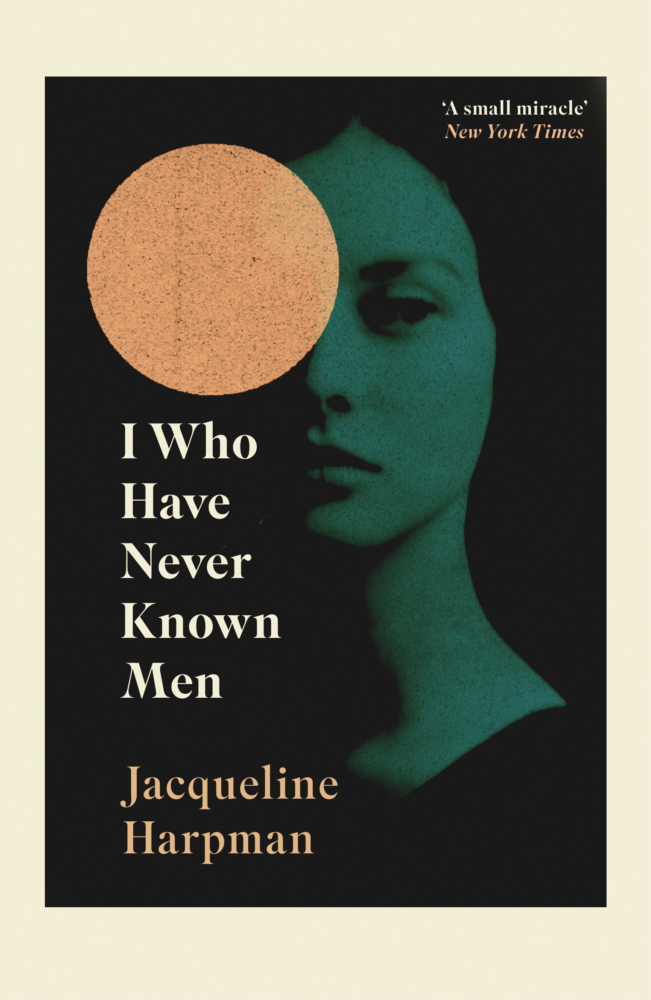
I Who Have Never Known Men Jacqueline Harpman
Imprisoned underground with older women, a girl questions a world she has never known.
Freedom & confinement Friendship
The Angel Maker Stefan Brijs
A geneticist returns to his village with three identical children and disturbing secrets.
Science & perception Faith & doubt
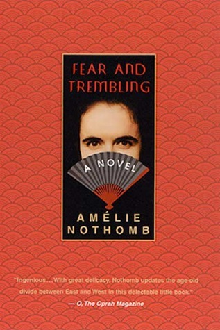
Fear and Trembling Amélie Nothomb
A young Belgian employee struggles to navigate hierarchy inside a Japanese corporation.
Class & society Satire
Bosnia and Herzegovina
Starting point: Ivo Andrić — The Bridge on the Drina
Cover Book and links Themes and reading notes
The Bridge on the Drina Ivo Andrić
Starting point
A Bosnian bridge witnesses generations of everyday life, shifting empires and communal conflict.
History & heritage War & conflict
Death and the Dervish Meša Selimović
A dervish searching for his arrested brother confronts Ottoman authority and his own beliefs.
Faith & doubt Power & politics
The Fortress Meša Selimović
A returning soldier seeks ordinary happiness while poverty and political intrigue close around him.
Love & relationships Power & politics
How the Soldier Repairs the Gramophone Saša Stanišić
A Bosnian boy turns to storytelling as war threatens his family and hometown.
Coming of age War & conflict
The Lazarus Project Aleksandar Hemon
An immigrant writer investigates a century-old killing, tracing another outsider’s journey to Chicago.
Migration & exile Identity & belonging
Bulgaria
Starting point: Georgi Gospodinov — The Physics of Sorrow
Cover Book and links Themes and reading notes
The Iron Candlestick Dimitar Talev
A family’s ambitions and conflicts unfold amid the struggle for Bulgarian independence under Ottoman rule.
Family Power & politics
The Physics of Sorrow Georgi Gospodinov
Starting point
A narrator wanders through memory and other lives, guided by the Minotaur’s myth.
Memory & loss Myth & folklore
Natural Novel Georgi Gospodinov
A Bulgarian writer assembles everyday fragments into a novel while his marriage disintegrates.
Art & literature Narrative experiment
Tobacco Dimitar Dimov
A tobacco magnate’s ambition and love affair unfold amid class conflict in prewar Bulgaria.
Family Tradition & change
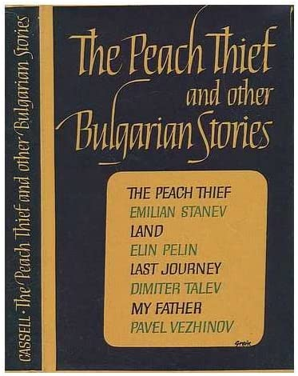
The Peach Thief Emiliyan Stanev
A Serbian prisoner and a Bulgarian officer’s wife pursue forbidden love during wartime.
Love & relationships War & conflict
Czechia
Starting point: Bohumil Hrabal — I Served the King of England
Cover Book and links Themes and reading notes
Too Loud a Solitude Bohumil Hrabal
A wastepaper worker secretly rescues books, building an inner life under a police state.
Art & literature
I Served the King of England Bohumil Hrabal
Starting point
An ambitious Prague waiter pursues wealth through the upheavals of twentieth-century Czechoslovakia.
Class & society Satire
The Unbearable Lightness of Being Milan Kundera
Entangled lovers test desire, fidelity and freedom against Czechoslovakia’s shifting political landscape.
Love & relationships Power & politics
The Joke Milan Kundera
A man seeks revenge for the political punishment triggered by a youthful joke.
Power & politics
The Good Soldier Švejk Jaroslav Hašek
A soldier’s apparently foolish obedience exposes the absurdities of the First World War.
War & conflict Satire
Denmark
Starting point: Henrik Pontoppidan — Lucky Per
Cover Book and links Themes and reading notes
Niels Lyhne Jens Peter Jacobsen
An aspiring poet struggles to reconcile artistic ambition, love and an elusive life.
Faith & doubt Love & relationships
Lucky Per Henrik Pontoppidan
First published: 1898–1904
Starting point
A clergyman’s ambitious son leaves provincial Denmark to pursue engineering and reinvention in Copenhagen.
Coming of age Faith & doubt
Katinka Herman Bang
First published: 1886
A married Danish woman’s attraction to a newcomer reveals the emptiness of her domestic life.
Love & relationships Gender & sexuality
The History of Danish Dreams Peter Høeg
Generations of Danish dreamers pursue rebellion, belonging and impossible ambitions through a surreal family history.
Family Tradition & change
This Should Be Written in the Present Tense Helle Helle
A young woman drifts through relationships and everyday routines instead of attending university.
Coming of age Love & relationships
United Kingdom
Starting point: George Eliot — Middlemarch
Cover Book and links Themes and reading notes
Middlemarch George Eliot
First published: 1871–72
Starting point
Provincial lives intertwine as idealism, marriage and ambition meet the limits of English society.
Love & relationships Class & society
To the Lighthouse Virginia Woolf
A family’s island summers reveal shifting attachments, private perceptions and the passage of time.
Family Narrative experiment
The Tortoise and the Hare Elizabeth Jenkins
A wife fears losing her husband to their seemingly unremarkable, determined neighbour.
Love & relationships
The Remains of the Day Kazuo Ishiguro
An ageing butler revisits his loyalty to an employer and a love left unspoken.
Memory & loss Identity & belonging
White Teeth Zadie Smith
Three families’ intertwined generations explore friendship, cultural inheritance and the past’s persistent claims.
Family Identity & belonging
North Macedonia
Cover Book and links Themes and reading notes
Freud's Sister Goce Smilevski
Freud’s sister recalls her constrained life as the Nazi threat closes around Vienna.
Gender & sexuality Family
Conversation with Spinoza Goce Smilevski
A fictional conversation explores Spinoza’s intellectual convictions alongside his desires and private isolation.
Faith & doubt Love & relationships
A Spare Life Lidija Dimkovska
Conjoined sisters grow up in Skopje, seeking independence as Yugoslavia begins to fracture.
Family Identity & belonging
My Father's Books Luan Starova
A child discovers his father’s books amid displacement and successive Balkan political regimes.
Migration & exile Art & literature
Pirey Petre M. Andreevski
A Macedonian farming couple recounts lives battered by Balkan wars and competing political claims.
War & conflict Family
Estonia
Starting point: Jaan Kross — The Czar's Madman
Cover Book and links Themes and reading notes
The Czar's Madman Jaan Kross
Starting point
A dissident nobleman returns from imprisonment to surveillance and humiliation on his Livonian estate.
Power & politics Freedom & confinement
Professor Martens' Departure Jaan Kross
An Estonian jurist revisits the compromises made during his service to the Russian empire.
Power & politics Memory & loss
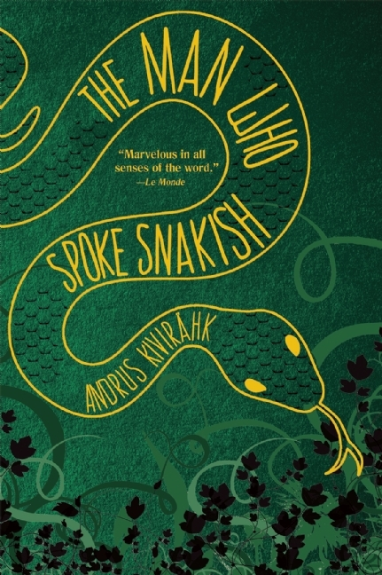
The Man Who Spoke Snakish Andrus Kivirähk
A boy preserves an ancient language as medieval Estonia abandons its forest traditions.
Myth & folklore Tradition & change
The Beauty of History Viivi Luik
A young Estonian models for a sculptor in Riga as political tensions stir memories.
Memory & loss Power & politics
Purge Sofi Oksanen
An elderly Estonian shelters a trafficked young woman, exposing secrets rooted in Soviet occupation.
Memory & loss Gender & sexuality
Belarus
Cover Book and links Themes and reading notes
The Ordeal Vasil Bykau
Two hungry partisans face capture and moral choices in German-occupied wartime Belarus.
War & conflict
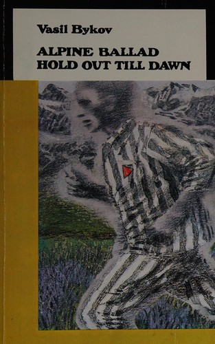
Alpine Ballad Vasil Bykau
Two concentration camp escapees find love while fleeing through the snowy Alpine wilderness.
War & conflict Love & relationships
Paranoia Viktor Martinovich
A young man’s romance becomes entangled with state security, disappearance and pervasive distrust.
Power & politics Love & relationships
Dogs of Europe Alhierd Bacharevič
Invented languages and intertwined lives explore identity and power across a fractured European world.
Power & politics Art & literature
King Stakh's Wild Hunt Uladzimir Karatkievics
A folklorist investigates a haunted aristocratic estate and the deadly legend surrounding its heiress.
Mystery & crime Myth & folklore
Finland
Starting point: Tove Jansson — The Summer Book
Cover Book and links Themes and reading notes
The Unknown Soldier Väinö Linna
Ordinary Finnish soldiers endure the Continuation War, challenging heroic myths about military obedience.
War & conflict
The Egyptian Mika Waltari
An exiled Egyptian physician recalls his life and travels after the fall of Akhenaten.
History & heritage
Purge Sofi Oksanen
An elderly Estonian shelters a trafficked young woman, exposing secrets rooted in Soviet occupation.
Memory & loss Gender & sexuality
The Year of the Hare Arto Paasilinna
An injured hare leads a dissatisfied journalist away from his old life.
Nature & environment Satire
The Summer Book Tove Jansson
Starting point
A girl and her grandmother share a summer on a small Finnish island.
Family Nature & environment
France
Starting point: Gustave Flaubert — Sentimental Education
Cover Book and links Themes and reading notes
Sentimental Education Gustave Flaubert
Starting point
A young man’s infatuation with an older woman shapes his ambitions and disappointments.
Love & relationships Satire
The Red and the Black Stendhal
A provincial social climber pursues status through calculated hypocrisy and dangerous love affairs.
Class & society Love & relationships
Chéri Colette
A young man’s arranged marriage unsettles his long relationship with an older courtesan.
Love & relationships Gender & sexuality
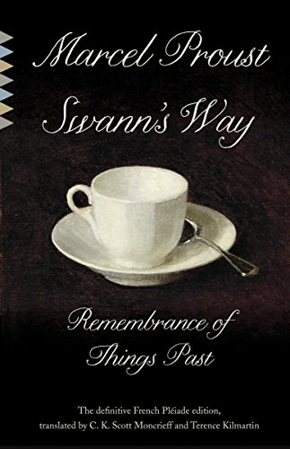
Swann's Way Marcel Proust
Childhood recollections and obsessive love open a meditation on memory, perception and lost time.
Memory & loss Love & relationships
Three Strong Women Marie NDiaye
Three women’s struggles expose the pressures of family, migration and unequal power.
Migration & exile Gender & sexuality
Greece
Starting point: Kostas Tachtsis — The Third Wedding
Cover Book and links Themes and reading notes
Zorba the Greek Nikos Kazantzakis
A reserved intellectual’s friendship with an exuberant labourer challenges his approach to living.
Friendship Faith & doubt
The Last Temptation of Christ Nikos Kazantzakis
A human Jesus struggles with desire, spiritual duty and the demands of sacrifice.
Faith & doubt
The Murderess Alexandros Papadiamantis
An ageing island woman’s response to women’s suffering takes a terrifying criminal form.
Gender & sexuality Mystery & crime
Kassandra and the Wolf Margarita Karapanou
A six-year-old girl’s unsettling perceptions reveal the cruelty hidden within everyday childhood.
Coming of age Narrative experiment
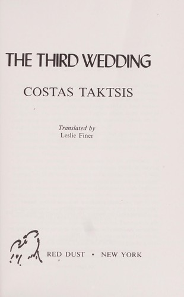
The Third Wedding Kostas Tachtsis
Starting point
Two Greek women’s memories reveal tangled marriages, family disappointments and the struggle to endure.
Family Memory & loss
Netherlands
Starting point: Louis Couperus — The Hidden Force
Cover Book and links Themes and reading notes
The Hidden Force Louis Couperus
Starting point
A Dutch colonial official in Java confronts mysterious forces and his household’s disintegration.
Colonialism
The Assault Harry Mulisch
A wartime reprisal haunts a Dutch survivor’s life through decades of partial revelations.
War & conflict Memory & loss
The Darkroom of Damocles W. F. Hermans
A Dutch tobacconist’s resistance missions become impossible to prove after the occupation ends.
War & conflict Identity & belonging
The Evenings Gerard Reve
A young Amsterdam office worker navigates family irritation, awkward conversations and everyday absurdity.
Identity & belonging Satire
The Twin Gerbrand Bakker
A farmer rearranges his home and life after moving his ageing father upstairs.
Family
Croatia
Starting point: Miroslav Krleža — The Return of Philip Latinowicz
Cover Book and links Themes and reading notes
On the Edge of Reason Miroslav Krleža
A respectable lawyer’s spontaneous honesty at a dinner party destroys his comfortable standing.
Class & society Satire
The Ministry of Pain Dubravka Ugrešić
Exiles from former Yugoslavia struggle with fractured identities, memories and life abroad.
Migration & exile Identity & belonging
S. Slavenka Drakulić
A Bosnian survivor confronts pregnancy, exile and memories of wartime sexual violence.
War & conflict Gender & sexuality
Our Man in Iraq Robert Perišić
A Croatian journalist invents dispatches when his cousin’s reporting from Iraq unravels.
Class & society Satire
The Return of Philip Latinowicz Miroslav Krleža
Starting point
A disillusioned painter returns to his Croatian hometown seeking artistic renewal and personal answers.
Art & literature Memory & loss
Ireland
Starting point: John McGahern — Amongst Women
Cover Book and links Themes and reading notes
A Portrait of the Artist as a Young Man James Joyce
A young Dubliner’s artistic awakening challenges the demands of family, religion and nation.
Coming of age Art & literature
Amongst Women John McGahern
Starting point
An Irish former revolutionary rules his farming household, testing his daughters’ loyalty.
Family
The Sea John Banville
A grieving art historian returns to a seaside village haunted by childhood memories.
Memory & loss
Milkman Anna Burns
An unwanted pursuer draws a young woman into dangerous rumours in a divided city.
Gender & sexuality Power & politics
The Last September Elizabeth Bowen
An Anglo-Irish household maintains its rituals as political violence threatens its sheltered world.
Coming of age Class & society
Iceland
Starting point: Halldór Laxness — Independent People
Cover Book and links Themes and reading notes
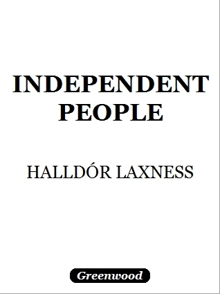
Independent People Halldór Laxness
Starting point
An Icelandic farmer’s fierce pursuit of independence threatens his family’s happiness and security.
Family Freedom & confinement
The Fish Can Sing Halldór Laxness
A boy raised among Reykjavík’s eccentrics discovers possibilities beyond his modest fishing life.
Coming of age Art & literature
The Blue Fox Sjón
An elusive fox draws an Icelandic hunter into a winter landscape of mystery.
Myth & folklore Nature & environment
Heaven and Hell Jón Kalman Stefánsson
After tragedy at sea, an Icelandic boy carries grief and poetry into an uncertain journey.
Memory & loss Art & literature
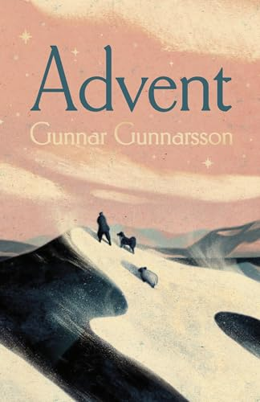
Advent Gunnar Gunnarsson
A man, his dog and a ram search Iceland’s winter mountains for lost sheep.
Nature & environment
Poland
Starting point: Wiesław Myśliwski — Stone Upon Stone
Cover Book and links Themes and reading notes
Stone Upon Stone Wiesław Myśliwski
Starting point
A rural Polish man recalls family, community and his enduring connection to the land.
Memory & loss Nature & environment
Primeval and Other Times Olga Tokarczuk
Three generations inhabit a mythical Polish village where history mingles with spirits and nature.
Family Myth & folklore
Ferdydurke Witold Gombrowicz
A professor forces an adult writer back into school, exposing the tyranny of immaturity.
Identity & belonging Satire
Solaris Stanisław Lem
A psychologist studying an alien ocean encounters the living likeness of his dead lover.
Science & perception Memory & loss
The Doll Bolesław Prus
A Warsaw businessman’s obsessive love exposes the tensions between wealth, aristocracy and social ambition.
Love & relationships Class & society
Latvia
Cover Book and links Themes and reading notes
Soviet Milk Nora Ikstena
A Latvian doctor’s thwarted ambitions strain her relationship with her daughter under Soviet rule.
Family Power & politics
High Tide Inga Ābele
A woman’s tangled relationships unfold backwards, revealing how youthful decisions shaped three lives.
Love & relationships Narrative experiment
Doom 94 Jānis Joņevs
A Latvian teenager seeks belonging in heavy metal during the upheavals of the 1990s.
Coming of age Identity & belonging
Flesh-Coloured Dominoes Zigmunds Skujiņš
A baroness’s impossible marital predicament opens a surreal exploration of bodies, ancestry and history.
Narrative experiment Power & politics
The Cage Alberts Bels
A successful Latvian architect disappears, leaving an investigator to unravel an unusual mystery.
Mystery & crime
Liechtenstein
Cover Book and links Themes and reading notes
Für immer die Alpen Benjamin Quaderer
German · English edition not verified
A fugitive whistle-blower recounts his life against the secrecy of Liechtenstein’s financial world.
Mystery & crime Power & politics
Lithuania
Cover Book and links Themes and reading notes
White Shroud Antanas Škėma
A Lithuanian émigré poet operates a New York hotel lift while memories fracture his present.
Migration & exile Narrative experiment
Vilnius Poker Ričardas Gavelis
A man’s obsessions and paranoia expose the disturbing absurdities of Soviet Vilnius.
Power & politics Narrative experiment
Sun-Tzu's Life in the Holy City of Vilnius Ričardas Gavelis
A former political manipulator retreats underground, recounting a life shaped by post-Soviet corruption.
Power & politics Satire
Breathing into Marble Laura Sintija Černiauskaitė
A woman adopts a troubled boy whose arrival unsettles her family and buried memories.
Family Memory & loss
In the Shadow of Wolves Alvydas Šlepikas
Children fleeing postwar East Prussia cross into Lithuania in search of food and survival.
Migration & exile War & conflict
Luxembourg
Cover Book and links Themes and reading notes
Amateur Jean Back
A writer revisits a youthful story, weaving first love into reflections on literary creation.
Art & literature Narrative experiment
Hungary
Starting point: Kosztolányi Dezső — Skylark
Cover Book and links Themes and reading notes
Skylark Kosztolányi Dezső
Starting point
An elderly couple discovers unexpected freedom during their unmarried daughter’s brief absence.
Family
Relations Móricz Zsigmond
An idealistic Hungarian official becomes entangled in nepotism and the corrupt dealings of provincial society.
Power & politics Class & society
Journey by Moonlight Szerb Antal
A honeymoon separation sends a Hungarian husband through Italy and memories of his bohemian youth.
Memory & loss Love & relationships
The Door Szabó Magda
A writer’s bond with her fiercely private housekeeper becomes a struggle over trust and care.
Friendship Class & society
Satantango Krasznahorkai László
A charismatic stranger returns to a decaying Hungarian settlement, offering hope with hidden motives.
Class & society Narrative experiment
Malta
Cover Book and links Themes and reading notes
In the Name of the Father (and of the Son) Immanuel Mifsud
After his father’s funeral, a son reads a wartime diary and reconsiders their relationship.
Family Memory & loss
Moldova
Cover Book and links Themes and reading notes
The Good Life Elsewhere Vladimir Lorchenkov
Moldovan villagers devise increasingly desperate schemes to reach Italy and find work.
Migration & exile Satire
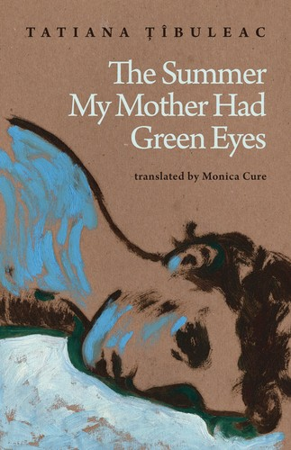
The Summer My Mother Had Green Eyes Tatiana Țîbuleac
A son recalls a summer in France that transformed his difficult relationship with his mother.
Family Memory & loss
The Glass Garden Tatiana Țîbuleac
A woman recalls a difficult Chișinău childhood shaped by language, identity and survival.
Coming of age Identity & belonging
Kinderland Liliana Corobca
With her parents working abroad, a Moldovan girl must raise her younger brothers.
Family Migration & exile
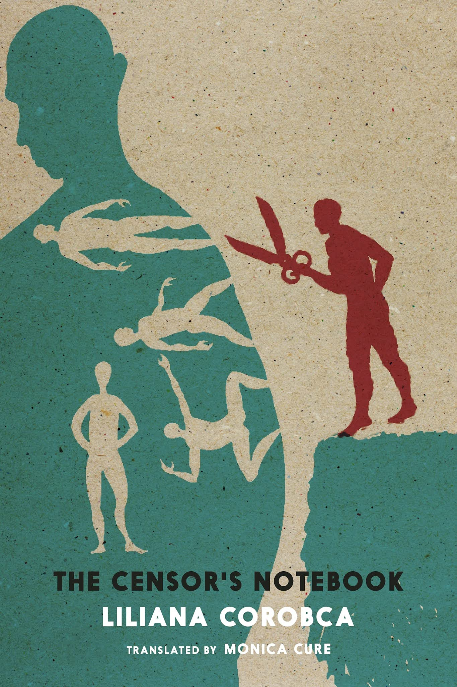
The Censor's Notebook Liliana Corobca
A Romanian censor’s private notebook reveals the intimate machinery of communist literary control.
Power & politics Art & literature
Monaco
Monaco-based author, also identified as Monégasque by local literary coverage. Author connection
Cover Book and links Themes and reading notes
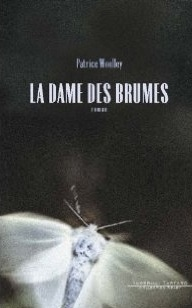
La dame des brumes Patrice Woolley
French · English edition not verified
A despairing man encounters an unexpected chance of love and a different future.
Love & relationships
Montenegro
Cover Book and links Themes and reading notes
The Son Andrej Nikolaidis
An abandoned writer wanders a Montenegrin town through a night of unsettling encounters.
Family
The Coming Andrej Nikolaidis
An Adriatic detective’s convenient fictions unravel when the town library mysteriously burns down.
Mystery & crime Faith & doubt
Till Kingdom Come Andrej Nikolaidis
A cynical reporter’s discovery about his grandmother throws his assumed family history into doubt.
Identity & belonging Power & politics
Germany
Starting point: Thomas Mann — Buddenbrooks
Cover Book and links Themes and reading notes
Buddenbrooks Thomas Mann
Starting point
Four generations of a German merchant family confront declining fortunes and a changing world.
Family Class & society
Berlin Alexanderplatz Alfred Döblin
A former prisoner tries to rebuild an honest life amid the turbulence of Berlin.
Mystery & crime
The Clown Heinrich Böll
A deserted clown confronts family hypocrisy, Catholic conventions and his own unraveling life.
Family Faith & doubt
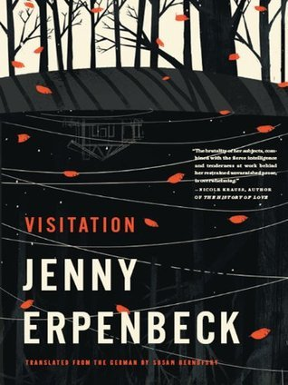
Visitation Jenny Erpenbeck
Successive inhabitants of a lakeside house reveal a century of displacement and German history.
History & heritage Memory & loss
Perfume Patrick Süskind
A man with an extraordinary sense of smell pursues the perfect scent through murder.
Mystery & crime
Norway
Starting point: Tarjei Vesaas — The Birds
Cover Book and links Themes and reading notes
The Birds Tarjei Vesaas
Starting point
A vulnerable man’s life with his sister is unsettled by the possibility of change.
Family
The Ice Palace Tarjei Vesaas
A girl’s disappearance leaves her newly close friend struggling with loss and unanswered questions.
Memory & loss Friendship
Hunger Knut Hamsun
A hungry wanderer’s search for food exposes poverty’s distortions of thought and city life.
Class & society Narrative experiment
Kristin Lavransdatter Sigrid Undset
A headstrong medieval Norwegian woman navigates love, faith and the consequences of her choices.
Love & relationships Family
Out Stealing Horses Per Petterson
An ageing recluse recalls a Norwegian summer that transformed his understanding of his father.
Memory & loss
Italy
Starting point: Giuseppe Tomasi di Lampedusa — The Leopard
Cover Book and links Themes and reading notes
The Leopard Giuseppe Tomasi di Lampedusa
Starting point
A Sicilian prince weighs tradition against political change as Garibaldi’s forces arrive.
Power & politics Class & society
The Late Mattia Pascal Luigi Pirandello
Mistakenly declared dead, a provincial man invents a new identity and discovers its limitations.
Identity & belonging Satire
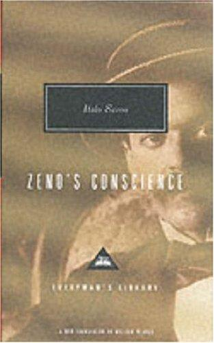
Zeno's Conscience Italo Svevo
A businessman recounts his addictions, failures and relationships through a haze of self-deception.
Family Satire
History Elsa Morante
Ordinary lives struggle for survival as war brings history’s violence into their daily world.
War & conflict Family
If on a winter's night a traveler Italo Calvino
A reader’s search for a complete novel leads through ten interrupted fictional worlds.
Art & literature Narrative experiment
Russia
Starting point: Leo Tolstoy — Anna Karenina
Cover Book and links Themes and reading notes
Anna Karenina Leo Tolstoy
Starting point
An adulterous love affair and a contrasting marriage explore desire, duty and Russian society.
Love & relationships
The Brothers Karamazov Fyodor Dostoevsky
A father’s murder entangles three brothers in rivalry, faith and questions of responsibility.
Family Faith & doubt
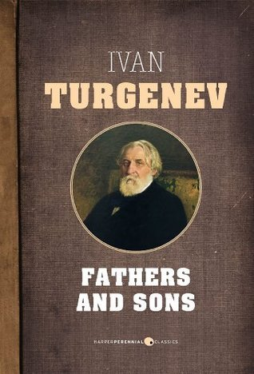
Fathers and Sons Ivan Turgenev
Two young men’s return home exposes generational conflict over love, belief and radical ideas.
Family Tradition & change
The Master and Margarita Mikhail Bulgakov
Fantasy and satire expose the contradictions of Stalinist society and its claims to moral authority.
Myth & folklore Satire
Life and Fate Vasily Grossman
A Soviet family’s wartime experiences reveal the human cost of ideological tyranny.
Family War & conflict
Portugal
Starting point: Eça de Queirós — The Maias
Cover Book and links Themes and reading notes
The Maias Eça de Queirós
Starting point
A privileged Lisbon doctor’s love affair threatens to repeat his family’s tragic history.
Family Love & relationships
The Crime of Father Amaro Eça de Queirós
A provincial priest’s forbidden desires expose hypocrisy within Portugal’s Church and respectable society.
Faith & doubt Satire
The Year of the Death of Ricardo Reis José Saramago
A poet returns to Lisbon in 1936 as dictatorship casts its shadow over Europe.
Art & literature Power & politics
Blindness José Saramago
An epidemic of blindness exposes cruelty and solidarity as society’s familiar structures collapse.
Freedom & confinement Power & politics
The Murmuring Coast Lídia Jorge
A woman revisits her marriage in colonial Mozambique, challenging an earlier account of wartime events.
Colonialism War & conflict
Romania
Starting point: Liviu Rebreanu — Forest of the Hanged
Cover Book and links Themes and reading notes
Forest of the Hanged Liviu Rebreanu
Starting point
An Austro-Hungarian officer confronts divided loyalties when military duty clashes with his conscience.
War & conflict Identity & belonging
The Moromete Family Marin Preda
A Romanian peasant family confronts economic pressures and the slow erosion of its traditional world.
Family Class & society
Adventures in Immediate Irreality Max Blecher
A young narrator’s encounters with everyday objects slip into disturbing experiences of unreality.
Coming of age Narrative experiment
The Land of Green Plums Herta Müller
Young Romanians seeking a better life in the city encounter surveillance and pervasive fear.
Power & politics
Solenoid Mircea Cărtărescu
A teacher’s ordinary diary spirals into a strange inquiry into existence and reality.
Narrative experiment
San Marino
Cover Book and links Themes and reading notes
Androceo. Storia di virus e di stelle Milena Ercolani
Italian · English edition not verified
A speculative future explores women’s political power and humanity’s relationship with the environment.
Gender & sexuality Freedom & confinement
Spain
Starting point: Mercè Rodoreda — The Time of the Doves
Cover Book and links Themes and reading notes
Don Quijote Miguel de Cervantes
First published: 1605 / 1615
A self-appointed knight and his loyal squire pursue adventures shaped by chivalric fantasies.
Satire
Fortunata and Jacinta Benito Pérez Galdós
First published: 1887
Two women’s devotion to the same man reveals the divisions of nineteenth-century Madrid.
Love & relationships Class & society
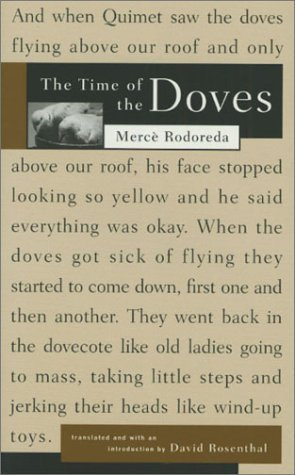
The Time of the Doves Mercè Rodoreda
Starting point
A working-class Barcelona woman navigates marriage, motherhood and the upheavals of civil war.
War & conflict
Nada Carmen Laforet
First published: 1945
A student arrives in Barcelona full of hope, finding violence within her grandmother’s household.
Coming of age Class & society
A Heart So White Javier Marías
A newly married man’s curiosity about his father exposes the unsettling power of family secrets.
Family Memory & loss
Switzerland
Starting point: Max Frisch — Stiller
Cover Book and links Themes and reading notes
Stiller Max Frisch
Starting point
A detained traveller denies being a missing Swiss sculptor, unsettling the meaning of identity.
Identity & belonging
Homo Faber Max Frisch
An emotionally detached engineer’s journey is disrupted by coincidences that reopen his past.
Science & perception
The Pledge Friedrich Dürrenmatt
A detective’s promise to a murdered child’s mother turns his investigation into an obsession.
Mystery & crime
Jakob von Gunten Robert Walser
A young man enters a peculiar school devoted to humility, obedience and service.
Coming of age
Beauty on Earth Charles-Ferdinand Ramuz
A young Cuban orphan’s arrival stirs desire and resentment in a Swiss lakeside village.
Love & relationships Gender & sexuality
Sweden
Starting point: Hjalmar Söderberg — Doctor Glas
Cover Book and links Themes and reading notes
Doctor Glas Hjalmar Söderberg
Starting point
A Stockholm doctor’s sympathy for a minister’s unhappy wife turns towards the possibility of murder.
Mystery & crime Gender & sexuality
The Emperor of Portugallia Selma Lagerlöf
A devoted father retreats into an imagined imperial identity when reality becomes unbearable.
Family
The Emigrants Vilhelm Moberg
A Swedish family leaves rural hardship behind, seeking a different future in Minnesota.
Migration & exile Family
Barabbas Pär Lagerkvist
The man freed instead of Jesus struggles with the desire and inability to believe.
Faith & doubt
Blackwater Kerstin Ekman
A woman’s arrival in northern Sweden entangles her family in a disturbing mystery.
Mystery & crime Family
Serbia
Starting point: Danilo Kiš — Hourglass
Cover Book and links Themes and reading notes
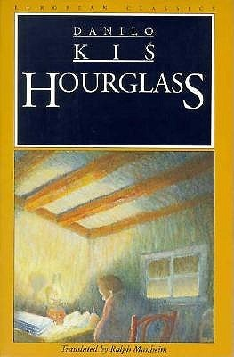
Hourglass Danilo Kiš
Starting point
A Jewish man’s final months before deportation emerge through fragments of memory and testimony.
War & conflict Narrative experiment
Migrations Miloš Crnjanski
Two Serbian brothers and one woman face love, displacement and eighteenth-century warfare.
War & conflict Love & relationships
Dictionary of the Khazars Milorad Pavić
An imaginary dictionary offers conflicting accounts of a vanished people and their beliefs.
Faith & doubt Narrative experiment
Bait David Albahari
An exiled son listens to his mother’s recorded memories while reconsidering identity and belonging.
Migration & exile Memory & loss
Lake Como Srđan Valjarević
A novelist’s month beside Lake Como unsettles his sense of solitude and social belonging.
Identity & belonging Art & literature
Slovakia
Cover Book and links Themes and reading notes
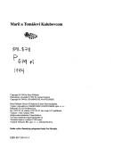
Rivers of Babylon Peter Pišťanek
A ruthless opportunist rises through a corrupt society adapting to a new democracy.
Power & politics Class & society
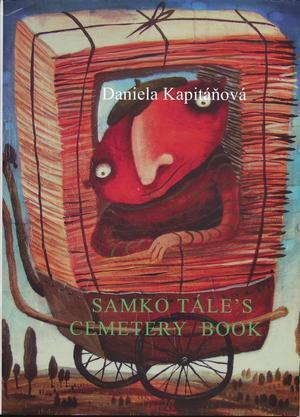
Samko Tále's Cemetery Book Daniela Kapitáňová
A conformist narrator’s prejudices expose continuities between communist and newly independent Slovakia.
Power & politics Satire
It Happened on September the First (or Whenever) Pavol Rankov
Three boys’ rivalry for one girl’s affection begins amid Central Europe’s shifting political borders.
Love & relationships Power & politics
Seeing People Off Jana Beňová
A young couple’s life outside Bratislava unfolds through everyday absurdities and shifting perceptions.
Love & relationships
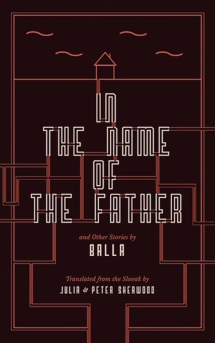
In the Name of the Father Balla
A father surveys his failed relationships while searching for everyone else to blame.
Family Satire
Slovenia
Starting point: Drago Jančar — I Saw Her That Night
Cover Book and links Themes and reading notes
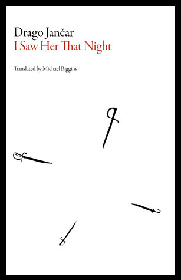
I Saw Her That Night Drago Jančar
Starting point
Five narrators reconstruct a Slovenian woman’s life and disappearance amid wartime upheaval.
War & conflict Love & relationships
The Galley Slave Drago Jančar
A wandering outsider’s historical misadventures expose the vulnerability of individuals to arbitrary power.
Power & politics Freedom & confinement
Alamut Vladimir Bartol
A religious leader manipulates devotion and promised paradise to turn followers into assassins.
Faith & doubt Power & politics
Southern Scum Go Home! Goran Vojnović
Life in a Ljubljana neighbourhood reveals the languages, tensions and loyalties of immigrant families.
Migration & exile Coming of age
The German Lottery Miha Mazzini
A Yugoslav town’s forced industrial transformation unfolds amid scarcity, surveillance and political fear.
Power & politics Satire
Ukraine
Cover Book and links Themes and reading notes
The City Valerian Pidmohylny
A provincial newcomer pursues literary success and romantic encounters in the city of Kyiv.
Art & literature Love & relationships
Death and the Penguin Andrey Kurkov
An obituary writer and his pet penguin become entangled in a sinister newspaper operation.
Mystery & crime Satire
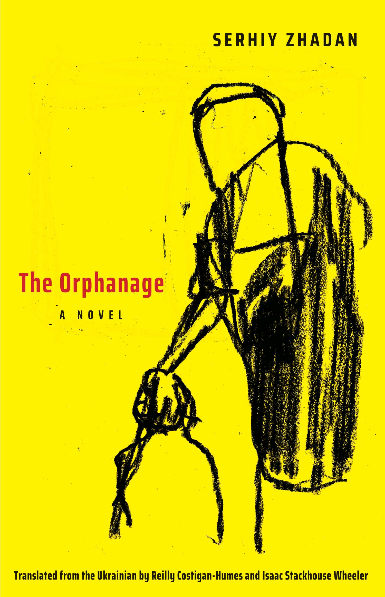
The Orphanage Serhiy Zhadan
A Ukrainian teacher crosses a shifting war zone to bring his nephew home.
War & conflict Family
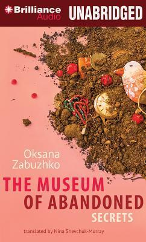
The Museum of Abandoned Secrets Oksana Zabuzhko
A journalist’s discovery links three women across generations of buried Ukrainian history.
Memory & loss History & heritage
Felix Austria Sofia Andrukhovych
Intertwined lives in a Galician town reveal family secrets beneath the Habsburg world’s nostalgic image.
Family Class & society
Vatican City
Cover Book and links Themes and reading notes
Hope Pope Francis with Carlo Musso
Nonfiction
Pope Francis traces his family roots, religious calling and life in the Vatican.
Country connection: Written by Pope Francis with Carlo Musso; included through Francis’s papacy and life in the Vatican.
Faith & doubt Family
The Name of God Is Mercy Pope Francis
Nonfiction
Pope Francis discusses mercy and forgiveness through conversations grounded in his pastoral experience.
Country connection: A book-length interview with Pope Francis during his papacy, centred on his teaching and experience.
Faith & doubt
Crossing the Threshold of Hope Pope John Paul II
Nonfiction
John Paul II examines faith, suffering and human dignity through questions about contemporary belief.
Country connection: Written by John Paul II as pope, offering a direct route into his thought and Vatican leadership.
Faith & doubt
Asia
Afghanistan
Cover Book and links Themes and reading notes
The Kite Runner Khaled Hosseini
Two Afghan boys’ friendship is fractured by betrayal, social divisions and political upheaval.
Friendship Class & society
A Thousand Splendid Suns Khaled Hosseini
Two Afghan women form a bond while enduring violence, oppression and shared hardship.
Gender & sexuality War & conflict
The Patience Stone Atiq Rahimi
A woman confides forbidden thoughts to her unconscious husband amid the violence of war.
Gender & sexuality War & conflict
Earth and Ashes Atiq Rahimi
An Afghan grandfather journeys to find his son, carrying news of devastation at home.
War & conflict Family
And the Mountains Echoed Khaled Hosseini
An Afghan brother and sister’s close bond is tested by poverty and separation.
Family
Azerbaijan
Cover Book and links Themes and reading notes
Ali and Nino Kurban Said
An Azerbaijani Muslim and Georgian Christian’s love confronts cultural divisions, revolution and war.
Love & relationships War & conflict
Stone Dreams Akram Aylisli
An Azerbaijani actor’s defence of an Armenian stranger exposes ethnic hatred and moral compromise.
Power & politics Identity & belonging
Bahrain
Cover Book and links Themes and reading notes
Quixotiq Ali Al Saeed
An isolated young man’s shattered ambitions propel him towards reckless and violent extremes.
Identity & belonging Mystery & crime
Bangladesh
Cover Book and links Themes and reading notes
A Golden Age Tahmima Anam
A widowed mother confronts impossible choices as Bangladesh’s independence war transforms her family’s life.
Family War & conflict
The Good Muslim Tahmima Anam
Bangladeshi siblings divided by religious conviction confront the unsettled aftermath of their independence war.
Family Faith & doubt
The Bones of Grace Tahmima Anam
A scientist’s search for origins intertwines with love, migration and an impending fossil expedition.
Love & relationships Identity & belonging
Brick Lane Monica Ali
A Bangladeshi woman’s arranged marriage and growing desires reshape her life in London.
Migration & exile Love & relationships
Shame Taslima Nasrin
A Bangladeshi Hindu family faces escalating persecution after religious violence erupts across the border.
Faith & doubt Identity & belonging
Bhutan
Cover Book and links Themes and reading notes
The Circle of Karma Kunzang Choden
A Bhutanese girl’s family responsibilities give way to a wider search for her path.
Coming of age Gender & sexuality
Dawa: The Story of a Stray Dog in Bhutan Kunzang Choden
A resourceful Bhutanese street dog pursues adventure, understanding and a place in his community.
Identity & belonging History & heritage
The Hero with a Thousand Eyes Karma Ura
A court servant’s life offers a glimpse of Bhutan’s monarchy and changing society.
History & heritage Power & politics
Brunei
Cover Book and links Themes and reading notes
The Forlorn Adventure Amir Falique
A Bruneian astronaut joins a lunar mission carrying software with extraordinary possibilities.
Science & perception War & conflict
Cyprus
Cover Book and links Themes and reading notes
A Watermelon, a Fish and a Bible Christy Lefteri
The invasion of Cyprus transforms ordinary lives and unsettles a young woman’s isolation.
Love & relationships War & conflict
The Beekeeper of Aleppo Christy Lefteri
A Syrian beekeeper and his wife flee wartime destruction, seeking an uncertain future in Britain.
Migration & exile War & conflict
Songbirds Christy Lefteri
A Sri Lankan nanny’s disappearance exposes the precarious lives of migrant workers in Cyprus.
Migration & exile Class & society
The Spice Box Letters Eve Makis
Inherited Armenian letters lead a journalist towards her grandmother’s long-silenced family history.
Family Memory & loss
Brandy Sour Constantia Soteriou
The occupants of a landmark hotel reveal Cyprus’s changing ambitions and twentieth-century divisions.
History & heritage Power & politics
South Korea
Cover Book and links Themes and reading notes
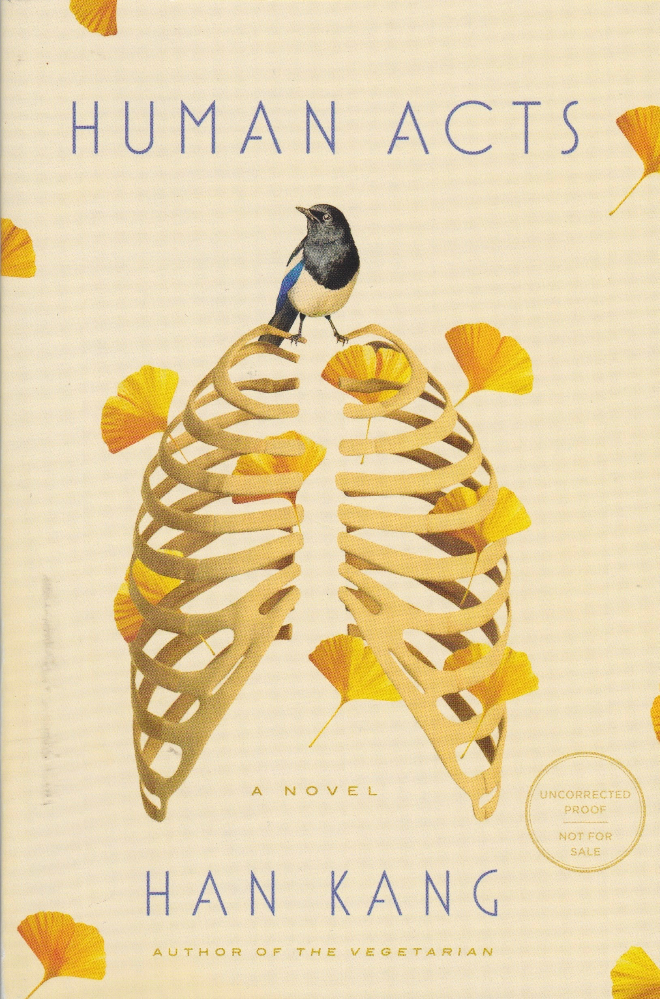
Human Acts Han Kang
Interconnected lives reveal the lasting wounds of a violently suppressed South Korean uprising.
Power & politics Memory & loss
The Vegetarian Han Kang
A woman’s refusal to eat meat provokes escalating conflict with her family and society.
Gender & sexuality Family
Greek Lessons Han Kang
A woman losing speech and a teacher losing sight find an unexpected connection.
Memory & loss Love & relationships
The Guest Hwang Sok-yong
Memories of a Korean War massacre challenge collective silence and the possibility of reconciliation.
War & conflict Memory & loss
Kim Jiyoung, Born 1982 Cho Nam-joo
An ordinary Korean woman’s life reveals the accumulating pressures of everyday gender inequality.
Gender & sexuality
United Arab Emirates
Cover Book and links Themes and reading notes
Temporary People Deepak Unnikrishnan
Interlinked stories explore the precarious lives of migrant workers in the United Arab Emirates.
Migration & exile Class & society
The Sand Fish Maha Gargash
A rebellious young woman confronts the constraints of society in the pre-oil Emirates.
Gender & sexuality
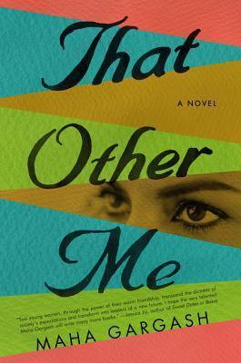
That Other Me Maha Gargash
Secrets and betrayals fracture an influential Emirati family across Dubai and Cairo.
Family Class & society
Rose's Diary Reem Al-Kamali
A young Dubai woman denied further education pours her frustrated ambitions into secret diaries.
Gender & sexuality Art & literature
Galagolia Dubai Abulhoul
After her mother’s death, a young Emirati girl discovers a portal into another universe.
Coming of age Family
North Korea
Cover Book and links Themes and reading notes
Friend Baek Nam-nyong
A North Korean judge investigating a divorce confronts the strains within his own marriage.
Love & relationships Family
Hwang Jini Hong Sok-jung
A young woman and a servant’s love confronts the status barriers of historical Korea.
Love & relationships Class & society
Philippines
Cover Book and links Themes and reading notes
Noli Me Tangere José Rizal
A love story exposes the repression and abuses of Spanish colonial rule in the Philippines.
Colonialism Power & politics
El Filibusterismo José Rizal
Returning in disguise, a disillusioned reformer plots revenge against Spanish colonial rule.
Colonialism Power & politics
Dusk F. Sionil José
A displaced Filipino tenant family seeks a new life under Spanish colonial rule.
Migration & exile Faith & doubt
Dogeaters Jessica Hagedorn
Lives in the Philippines under Marcos reveal the entanglement of spectacle, power and everyday experience.
Power & politics
Ilustrado Miguel Syjuco
A young writer investigates his mentor’s death and a missing manuscript exposing Philippine elites.
Art & literature Mystery & crime
Georgia
Cover Book and links Themes and reading notes
The Eighth Life (for Brilka) Nino Haratischwili
A Georgian family’s generations carry a secret chocolate recipe through revolution and Soviet upheaval.
Family Power & politics
A Man Was Going Down the Road Otar Chiladze
Greek myth and a tragic Georgian love story intertwine in a reimagined ancient world.
Myth & folklore Power & politics
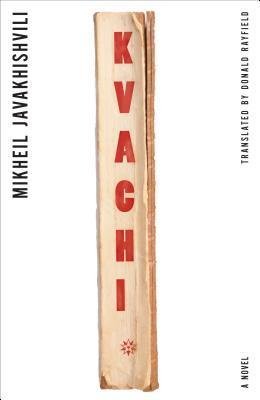
Kvachi Mikheil Javakhishvili
A Georgian swindler reinvents himself through fraud, seduction, revolution and improbable adventures.
Mystery & crime Satire
Journey to Karabakh Aka Morchiladze
A Georgian youth’s drug-buying trip turns into captivity amid the conflict over Karabakh.
War & conflict Freedom & confinement
The Pear Field Nana Ekvtimishvili
A young woman in a Georgian orphanage plans escape from institutional violence and neglect.
Coming of age Freedom & confinement
India
Starting point: R. K. Narayan — The Guide
Cover Book and links Themes and reading notes
The Guide R. K. Narayan
Starting point
A disgraced tourist guide is mistaken for a holy man and embraces the role.
Faith & doubt Identity & belonging
Kanthapura Raja Rao
Gandhi’s independence movement unsettles caste divisions and everyday life in a southern Indian village.
Colonialism Class & society
The Crooked Line Ismat Chughtai
1940s
A spirited Muslim girl explores desire and independence amid colonial India’s social upheaval.
Gender & sexuality Colonialism
A Fine Balance Rohinton Mistry
Four strangers’ lives converge as India’s Emergency brings upheaval, cruelty and fragile solidarity.
Power & politics Class & society
The Shadow Lines Amitav Ghosh
Two intertwined families reveal how political borders and communal violence shape intimate lives.
Memory & loss Power & politics
Indonesia
Starting point: Pramoedya Ananta Toer — This Earth of Mankind
Cover Book and links Themes and reading notes
This Earth of Mankind Pramoedya Ananta Toer
Starting point
A Javanese student’s love affair opens his eyes to colonial power and resistance.
Colonialism Love & relationships
Beauty Is a Wound Eka Kurniawan
A prostitute and her daughters endure grotesque misfortunes across Indonesia’s violent modern history.
Myth & folklore History & heritage
Man Tiger Eka Kurniawan
Family betrayals and a supernatural white tiger converge around a young Indonesian man.
Family Myth & folklore
Saman Ayu Utami
Women’s desires intersect with spirituality and resistance to the exploitation of Indonesian plantation workers.
Gender & sexuality Class & society
The Rainbow Troops Andrea Hirata
Children at a struggling island school defend their education against poverty and powerful interests.
Coming of age Class & society
Iraq
Cover Book and links Themes and reading notes
The Corpse Washer Sinan Antoon
An aspiring Iraqi artist confronts his family’s corpse-washing tradition amid mounting wartime deaths.
Art & literature War & conflict
Frankenstein in Baghdad Ahmed Saadawi
A man assembles Baghdad’s bomb victims into a corpse that takes on terrifying life.
War & conflict Myth & folklore
The Tobacco Keeper Ali Bader
A musician’s elusive identity becomes the centre of a murder investigation in Baghdad.
Mystery & crime Identity & belonging
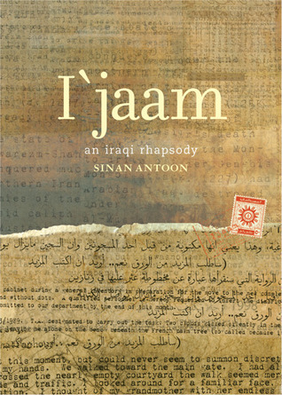
I'jaam Sinan Antoon
A detained Iraqi man’s manuscript interweaves prison life, youthful memories and frightening hallucinations.
Power & politics Memory & loss
The American Granddaughter Inaam Kachachi
An Iraqi American interpreter returns with US forces, dividing her loyalties and family.
War & conflict Identity & belonging
Iran
Starting point: Simin Daneshvar — Savushun
Cover Book and links Themes and reading notes
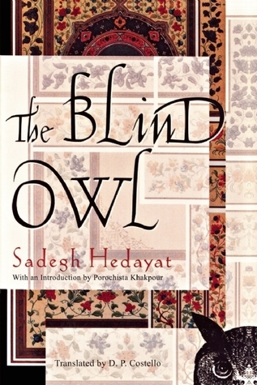
The Blind Owl Sadegh Hedayat
A young man’s fixation on a mysterious lover dissolves into despair and hallucination.
Love & relationships Narrative experiment
Savushun Simin Daneshvar
Starting point
A Shiraz family confronts foreign occupation and compromised authority during the Second World War.
Family War & conflict
Women Without Men Shahrnush Parsipur
Five Iranian women’s intersecting journeys lead them towards shared refuge in a garden.
Gender & sexuality Freedom & confinement
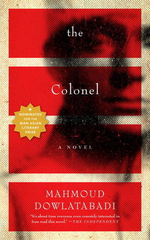
The Colonel Mahmoud Dowlatabadi
An Iranian colonel confronts memories of children divided by the revolution’s competing factions.
Family Power & politics
The Enlightenment of the Greengage Tree Shokoofeh Azar
A family’s experiences of revolutionary Iran unfold through the supernatural language of Persian storytelling.
Power & politics Myth & folklore
Israel
Cover Book and links Themes and reading notes
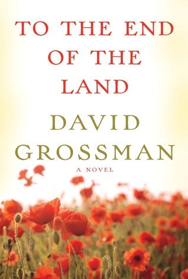
To the End of the Land David Grossman
An Israeli mother hikes through Galilee, telling her son’s story to ward off feared news.
War & conflict Family
My Michael Amos Oz
A Jerusalem woman’s vivid inner life draws her away from an increasingly strained marriage.
Love & relationships
The Lover A. B. Yehoshua
An Israeli husband searches for his wife’s lover after the upheaval of war.
Love & relationships War & conflict
Blooms of Darkness Aharon Appelfeld
A Jewish boy hidden in a brothel forms an uneasy bond with his protector.
War & conflict Love & relationships
The Sound of Our Steps Ronit Matalon
An immigrant mother and her children navigate family tensions and the dislocations of exile.
Family Migration & exile
Japan
Starting point: Natsume Sōseki — Kokoro
Cover Book and links Themes and reading notes
Kokoro Natsume Sōseki
Starting point
A young man’s friendship with an enigmatic teacher reveals a past marked by guilt.
Friendship Memory & loss
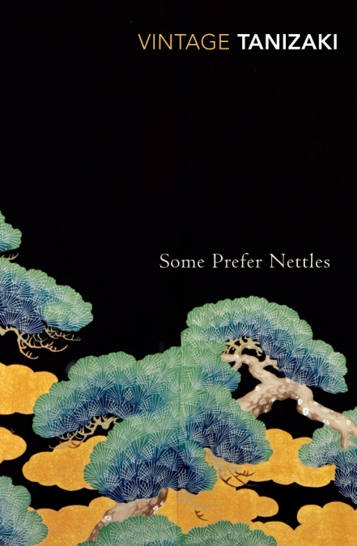
Some Prefer Nettles Jun'ichirō Tanizaki
First published: 1929
A failing marriage becomes a battleground between inherited Japanese traditions and modern influences.
Love & relationships Tradition & change
The Makioka Sisters Jun'ichirō Tanizaki
First published: 1943–48
Four Osaka sisters negotiate marriage, family pride and declining fortunes before the war.
Family Tradition & change
The Woman in the Dunes Kōbō Abe
An insect collector accepts seaside lodging and finds himself trapped in a sand pit.
Freedom & confinement Nature & environment
Tokyo Ueno Station Yū Miri
A homeless man’s ghost recalls a life shaped by loss and modern Japanese history.
Class & society Memory & loss
Yemen
Cover Book and links Themes and reading notes
The Hostage Zayd Mutee' Dammaj
A Yemeni boy held as a political hostage discovers palace life and its inequalities.
Power & politics Class & society
The Handsome Jew Ali al-Muqri
A Jewish man and Muslim woman pursue forbidden love in a divided Yemeni society.
Love & relationships Faith & doubt
Hurma Ali al-Muqri
A nameless Yemeni woman seeks freedom amid religious control and repeated personal disappointments.
Gender & sexuality Faith & doubt
A Land Without Jasmine Wajdi al-Ahdal
A young woman’s disappearance exposes obsession, sexual repression and competing accounts within her community.
Mystery & crime Gender & sexuality
The Suslov's Daughter Habib Abdulrab Sarori
A Yemeni exile recounts his life across decades of ideological upheaval and disillusionment.
Love & relationships Power & politics
Jordan
Cover Book and links Themes and reading notes
Pillars of Salt Fadia Faqir
Two women confined in a Jordanian psychiatric hospital share stories of their lives.
Freedom & confinement Friendship
My Name Is Salma Fadia Faqir
A Muslim asylum seeker in England tries to escape her brother’s threatened honour killing.
Migration & exile Gender & sexuality
Willow Trees Don't Weep Fadia Faqir
A Jordanian woman’s search for her absent father leads her towards Afghanistan.
Family Travel
When the Wolves Grow Old Jamal Naji
Competing voices expose the secret lives of social climbers moving through Amman’s power structures.
Power & politics Class & society
Time of White Horses Ibrahim Nasrallah
Three generations of a Palestinian village family endure the forces transforming their homeland.
Family Colonialism
Cambodia
Cover Book and links Themes and reading notes
In the Shadow of the Banyan Vaddey Ratner
A Cambodian girl clings to her father’s stories while enduring Khmer Rouge violence.
Coming of age Power & politics
Music of the Ghosts Vaddey Ratner
A former refugee returns to Cambodia, seeking answers about her father’s disappearance.
Migration & exile Memory & loss
Qatar
Cover Book and links Themes and reading notes
The Corsair Abdulaziz Al-Mahmoud
A Gulf corsair confronts expanding British influence amid competing maritime and regional ambitions.
Colonialism Power & politics
The Holy Sail Abdulaziz Al-Mahmoud
Love and tribal loyalties unfold as Portuguese fleets pursue control of the Gulf’s trade.
Colonialism Love & relationships
Kazakhstan
Cover Book and links Themes and reading notes
The Dead Wander in the Desert Rollan Seisenbayev
A Kazakh fisherman struggles to protect the Aral Sea from human-made ecological destruction.
Nature & environment
The Time of Ordeal Mukhtar Auezov
A Kazakh community’s resistance unfolds amid the violence and upheaval of the 1916 revolt.
Colonialism Migration & exile
The End of the Legend Abish Kekilbayev
Date not verified
A powerful khan’s growing suspicion exposes the loneliness and spiritual confinement of absolute rule.
Power & politics
Lonely Yurt Smagul Yelubay
Kazakh lives endure the famine and political repression that devastated the 1930s steppe.
Power & politics
Timor-Leste
Cover Book and links Themes and reading notes
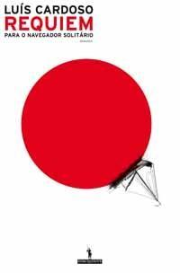
Requiem para o navegador solitário Luís Cardoso
Portuguese · English edition not verified
A young woman’s journey through Timor unfolds against colonial rule and approaching war.
War & conflict Coming of age
China
Starting point: Yu Hua — To Live
Cover Book and links Themes and reading notes
To Live Yu Hua
Starting point
A gambler becomes a farmer, enduring family losses and China’s successive political upheavals.
Family Power & politics
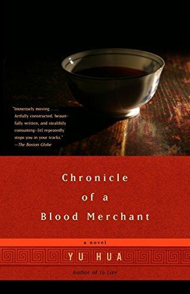
Chronicle of a Blood Merchant Yu Hua
A struggling Chinese worker repeatedly sells his blood to sustain his family.
Family Class & society
Dream of Ding Village Yan Lianke
A poor Chinese village’s blood-selling scheme brings disease, greed and devastating communal consequences.
Class & society Family
Red Sorghum Mo Yan
Three generations’ lives intertwine with myth and resistance during Japan’s invasion of China.
Family War & conflict
Rickshaw Boy Lao She
A poor Beijing rickshaw driver pursues independence as repeated misfortunes erode his hopes.
Class & society
Kyrgyzstan
Cover Book and links Themes and reading notes
The Day Lasts More Than a Hundred Years Chingiz Aitmatov
A railway worker’s funeral journey across the steppe unfolds through personal memory and folklore.
Memory & loss Myth & folklore
The Place of the Skull Chingiz Aitmatov
Displaced wolves and troubled human lives expose violence against nature, faith and conscience.
Nature & environment Faith & doubt
Jamilia Chingiz Aitmatov
A young artist recalls a wartime love affair that challenged his Kyrgyz village’s conventions.
Love & relationships
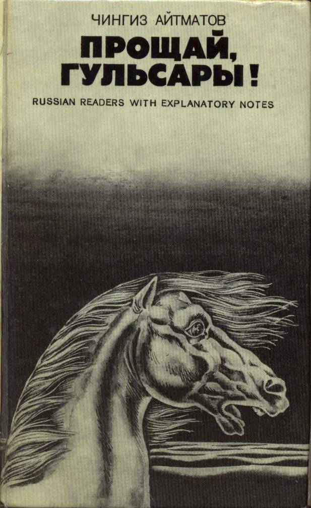
Farewell, Gulsary! Chingiz Aitmatov
An old herdsman’s bond with his horse reveals a lifetime of friendship and disillusionment.
Friendship Tradition & change
The White Ship Chingiz Aitmatov
A neglected boy seeks refuge in sacred legends as the adults around him disappoint him.
Family
Kuwait
Cover Book and links Themes and reading notes
The Bamboo Stalk Saud Alsanousi
A Filipino maid’s relationship with a Kuwaiti man exposes family pressure and social exclusion.
Family Identity & belonging
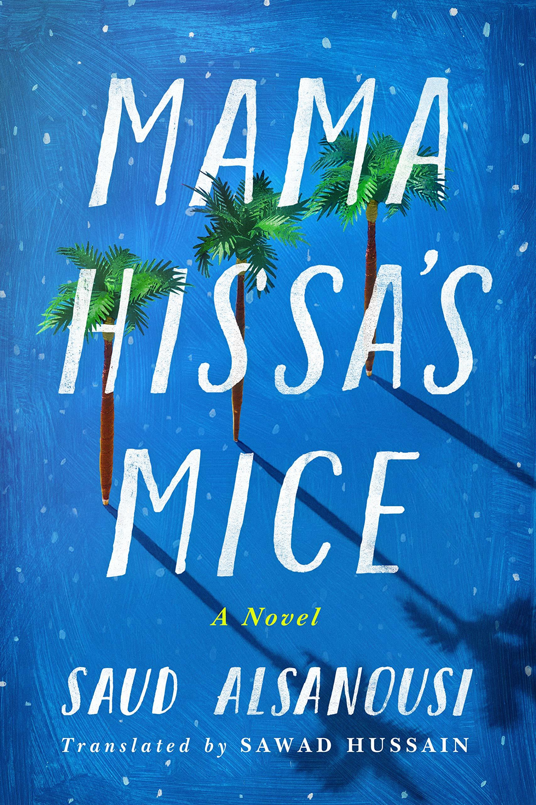
Mama Hissa's Mice Saud Alsanousi
Three Kuwaiti friends confront sectarian divisions that threaten their bonds and their country.
Friendship Power & politics
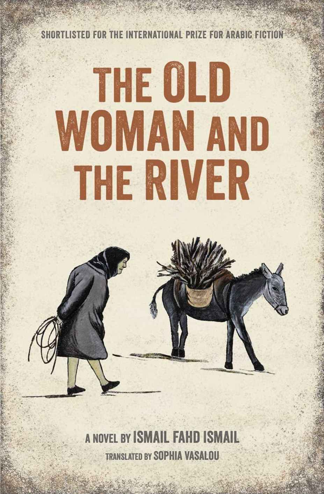
The Old Woman and the River Ismail Fahd Ismail
The aftermath of the Iran-Iraq War reveals a devastated river landscape and shattered livelihoods.
War & conflict Nature & environment
The Book Censor's Library Bothayna Al-Essa
A government book censor’s forbidden reading draws him towards a dangerous underground literary world.
Power & politics Art & literature
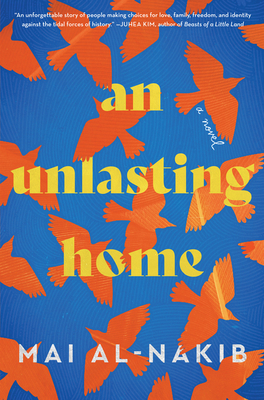
An Unlasting Home Mai Al-Nakib
Three generations of Arab women’s lives connect Kuwait with a wider world of migration.
Family Gender & sexuality
Laos
Lao-Canadian diaspora author, born in a Lao refugee camp in Thailand; this is not a Laos-set novel. Author connection
Cover Book and links Themes and reading notes
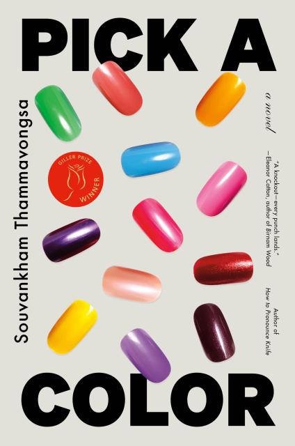
Pick a Color Souvankham Thammavongsa
A day in a nail salon reveals the gulf between service and private experience.
Class & society Identity & belonging
Lebanon
Starting point: Elias Khoury — Gate of the Sun
Cover Book and links Themes and reading notes
Gate of the Sun Elias Khoury
Starting point
A man’s vigil beside a comatose Palestinian fighter unfolds into stories of displacement.
Migration & exile Memory & loss
The Story of Zahra Hanan al-Shaykh
A Lebanese woman escapes an abusive past through marriage, then returns to wartime Beirut.
Gender & sexuality War & conflict
June Rain Jabbour Douaihy
A returning Lebanese emigrant investigates the village massacre that killed the father he never knew.
Memory & loss Power & politics
The Mehlis Report Rabee Jaber
Beirut residents await an assassination report as fresh explosions unsettle the city’s daily life.
Power & politics Mystery & crime
Leo Africanus Amin Maalouf
A Renaissance traveller’s imagined memoir follows a life shaped by exile and encounters across cultures.
Migration & exile Identity & belonging
Malaysia
Starting point: Tan Twan Eng — The Garden of Evening Mists
Cover Book and links Themes and reading notes
The Garden of Evening Mists Tan Twan Eng
Starting point
A survivor of Japanese occupation seeks a gardener’s help to commemorate her sister.
Memory & loss War & conflict
The Gift of Rain Tan Twan Eng
A young man in wartime Penang navigates conflicting loyalties, betrayal and enduring attachments.
War & conflict Identity & belonging
Green Is the Colour Lloyd Fernando
Lives strained by racial and religious divisions reveal Malaysia’s struggle for coexistence.
Love & relationships Faith & doubt
The Harmony Silk Factory Tash Aw
A Malayan merchant’s marriage and honeymoon unfold beneath the threat of Japanese invasion.
Family War & conflict
The Sum of Our Follies Shih-Li Kow
Two narrators recount the eccentric everyday lives of a flood-prone Malaysian town.
Coming of age Tradition & change
Maldives
Cover Book and links Themes and reading notes
Lifestyle in the Countryside Ali Hussain (Naifaru)
Dhivehi · English catalogue title
Rivalries among island officials expose the tensions beneath everyday life in a Maldivian community.
Power & politics History & heritage
Myanmar
Cover Book and links Themes and reading notes
Smile as They Bow Nu Nu Yi
A flamboyant spirit medium navigates desire, devotion and rivalry during a Burmese festival.
Gender & sexuality Love & relationships
The Road to Wanting Wendy Law-Yone
Stranded on the Chinese-Burmese border, a woman reflects on her search for belonging.
Migration & exile Identity & belonging
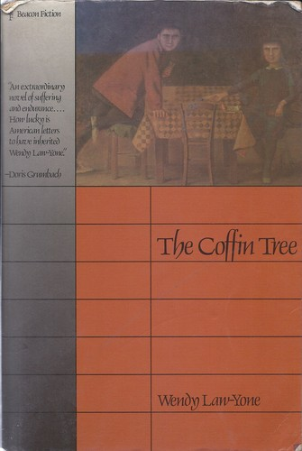
The Coffin Tree Wendy Law-Yone
Siblings expelled from Burma by a coup confront indifference and hardship in America.
Migration & exile Family
Irrawaddy Tango Wendy Law-Yone
A village girl becomes a dictator’s wife, then turns towards rebellion against him.
Power & politics Gender & sexuality
Mongolia
Cover Book and links Themes and reading notes
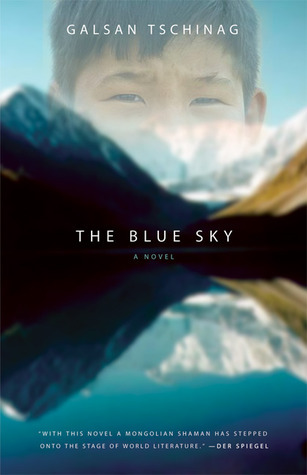
The Blue Sky Galsan Tschinag
A Tuvan shepherd boy encounters loss as modern life encroaches on his nomadic world.
Coming of age Tradition & change
The Gray Earth Galsan Tschinag
A Tuvan boy’s boarding school education pits cultural erasure against spiritual and family ties.
Coming of age Identity & belonging
The White Mountain Galsan Tschinag
A Tuvan youth’s schooling away from home deepens the tensions between tradition and modernity.
Coming of age Tradition & change
Nepal
Cover Book and links Themes and reading notes
Blue Mimosa Parijat
A troubled war veteran’s encounters with a young woman expose desire and psychological damage.
Love & relationships Gender & sexuality
Sumnima B. P. Koirala
A man and woman’s relationship reveals painful conflicts between desire, belief and cultural expectations.
Love & relationships Faith & doubt
Karnali Blues Buddhisagar
A son recalls childhood while confronting his father’s declining fortunes, dignity and health.
Family Coming of age
Buddha's Orphans Samrat Upadhyay
An orphan boy and a privileged girl’s love unfolds amid Nepal’s political upheavals.
Love & relationships Family
Seasons of Flight Manjushree Thapa
A Nepali woman wins a green card and seeks an independent life in Los Angeles.
Migration & exile Identity & belonging
Oman
Cover Book and links Themes and reading notes
Celestial Bodies Jokha Alharthi
Three Omani sisters’ choices in love reveal a society moving between inherited expectations and change.
Family Tradition & change
Bitter Orange Tree Jokha Alharthi
An Omani student in Britain revisits the memory of the woman she considered her grandmother.
Migration & exile Memory & loss
Silken Gazelles Jokha Alharthi
A childhood separation haunts an Omani woman’s search for enduring love and belonging.
Friendship Memory & loss
Dilshad Bushra Khalfan
Three generations of an Omani family navigate hunger, marginalisation and the search for agency.
Family Class & society
Earth Weeps, Saturn Laughs Abdulaziz Al Farsi
An Omani civil servant returns home, confronting painful love and unsettling local realities.
Tradition & change Identity & belonging
Armenia
Cover Book and links Themes and reading notes
Three Apples Fell from the Sky Narine Abgaryan
An isolated Armenian village sustains itself through gossip, shared routines and unexpected possibilities.
Friendship Love & relationships
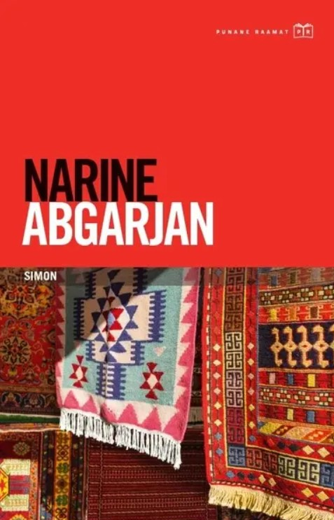
Simon Narine Abgaryan
Women gather after an Armenian mason’s death, recalling the different lives touched by his love.
Gender & sexuality Memory & loss
Pakistan
Starting point: Intizar Husain — Basti
Cover Book and links Themes and reading notes
Basti Intizar Husain
Starting point
The aftermath of Partition unsettles memory, belonging and the meaning of home.
Power & politics Memory & loss
The Reluctant Fundamentalist Mohsin Hamid
A Pakistani man recounts his disillusionment with America to a stranger in Lahore.
Identity & belonging Power & politics
A Case of Exploding Mangoes Mohammed Hanif
A satirical conspiracy surrounds the fatal plane crash of Pakistan’s military ruler Zia-ul-Haq.
Power & politics Satire
Burnt Shadows Kamila Shamsie
Lives shaped by Nagasaki’s bombing intertwine across continents through love, betrayal and political violence.
War & conflict Migration & exile
Ice-Candy-Man Bapsi Sidhwa
A young Parsee girl witnesses Partition tear apart the everyday world of Lahore.
Coming of age Power & politics
Palestine
Starting point: Ghassan Kanafani — Men in the Sun
Cover Book and links Themes and reading notes
Men in the Sun Ghassan Kanafani
Starting point
Three Palestinian refugees undertake a dangerous journey to Kuwait in search of work.
Migration & exile Class & society
Returning to Haifa Ghassan Kanafani
A Palestinian couple returns to Haifa, confronting the home and infant they left behind.
Migration & exile Family
Wild Thorns Sahar Khalifeh
A returning Palestinian resistance fighter finds his homeland’s compromises more complicated than expected.
Power & politics Class & society
Minor Detail Adania Shibli
A Palestinian woman’s historical investigation reaches back to a young woman’s murder in 1949.
War & conflict Memory & loss
Time of White Horses Ibrahim Nasrallah
Three generations of a Palestinian village family endure the forces transforming their homeland.
Family Colonialism
Sri Lanka
Cover Book and links Themes and reading notes
The Seven Moons of Maali Almeida Shehan Karunatilaka
A dead war photographer seeks answers amid the violence and absurdities of Sri Lanka.
War & conflict Myth & folklore
Chinaman Shehan Karunatilaka
A dying sportswriter searches for a forgotten cricketer he believes was the greatest.
Identity & belonging
Reef Romesh Gunesekera
A Sri Lankan houseboy’s life reveals love and vulnerability within a changing island society.
Migration & exile Memory & loss
Funny Boy Shyam Selvadurai
A Tamil boy discovers his sexuality as communal tensions escalate in Sri Lanka.
Coming of age Gender & sexuality
A Passage North Anuk Arudpragasam
A young man’s journey into northern Sri Lanka becomes a meditation on war and loss.
War & conflict Memory & loss
Saudi Arabia
Cover Book and links Themes and reading notes
Cities of Salt Abdul Rahman Munif
The discovery of oil transforms an impoverished oasis, exposing exploitation and competing ambitions.
Class & society Power & politics
Endings Abdul Rahman Munif
A desert village’s prolonged drought tests its inhabitants and their relationship with surrounding wildlife.
Nature & environment Tradition & change
Girls of Riyadh Rajaa Alsanea
Four young Saudi women pursue relationships within the constraints of a tightly controlled society.
Love & relationships Gender & sexuality
The Dove's Necklace Raja Alem
An unidentified woman’s death draws a detective into the hidden lives of Mecca.
Mystery & crime Gender & sexuality
The Beaver Mohammed Hasan Alwan
A Saudi man in Portland revisits his fractured family’s history through encounters with a beaver.
Family Memory & loss
Singapore
Cover Book and links Themes and reading notes
Fistful of Colours Suchen Christine Lim
A Singaporean teacher’s search for artistic identity opens onto her family’s immigrant histories.
Art & literature Identity & belonging
The River's Song Suchen Christine Lim
A woman returning to Singapore confronts the disappearance of her childhood riverside world.
Love & relationships Memory & loss
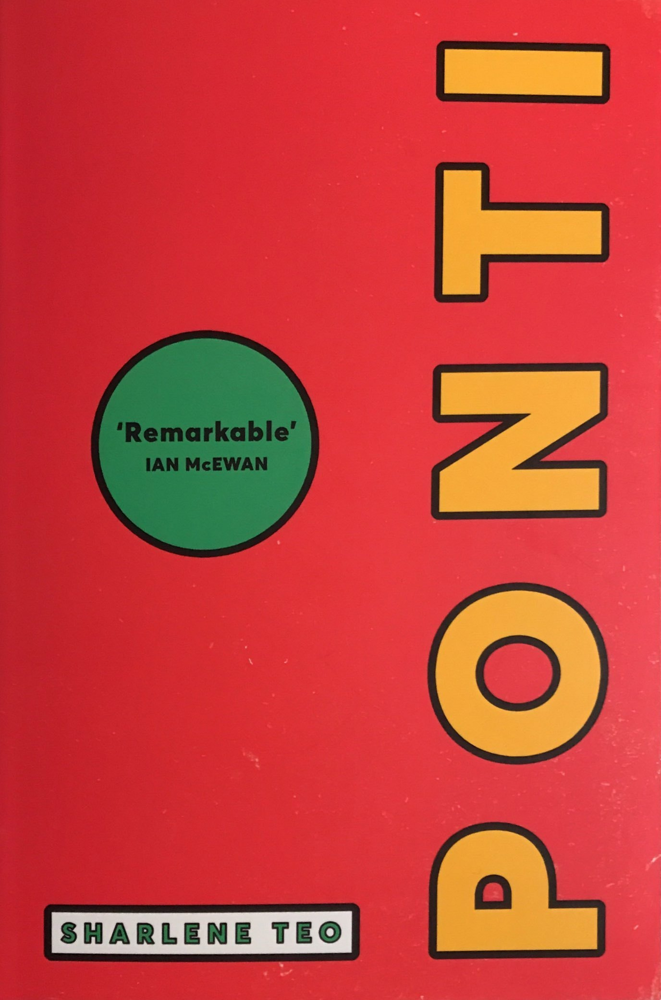
Ponti Sharlene Teo
A Singaporean teenager’s intense friendship becomes entangled with her troubled relationship with her mother.
Friendship Memory & loss
How We Disappeared Jing-Jing Lee
A Singaporean woman’s wartime suffering resurfaces in a story of memory, identity and survival.
War & conflict Memory & loss
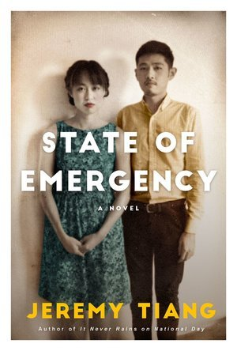
State of Emergency Jeremy Tiang
An extended family’s history reveals the contested legacy of leftist politics in Singapore and Malaya.
Family Power & politics
Syria
Cover Book and links Themes and reading notes
In Praise of Hatred Khaled Khalifa
Lives constrained by Syrian authoritarianism reveal overlapping forms of political and religious repression.
Power & politics Faith & doubt
No Knives in the Kitchens of This City Khaled Khalifa
An abandoned mother and her children struggle amid violence and social decay in Aleppo.
Family Power & politics
Death Is Hard Work Khaled Khalifa
Three siblings’ attempt to bury their father becomes a journey through Syria’s civil war.
Family War & conflict
The Sail and the Storm Hanna Mina
Syrian port workers confront exploitation by French colonial power and its local agents.
Colonialism Class & society
Sarmada Fadi Azzam
Generations of women connect a Syrian Druze town with distant lives and religious coexistence.
Gender & sexuality Faith & doubt
Tajikistan
Cover Book and links Themes and reading notes
Hurramabad Andrei Volos
Interwoven stories follow Russians and Tajiks facing civil war after the Soviet collapse.
War & conflict Migration & exile
Thailand
Cover Book and links Themes and reading notes
The Judgment Chart Korbjitti
A former monk’s downfall reveals the destructive force of judgment in a Thai community.
Satire Class & society
Four Reigns Kukrit Pramoj
A woman and her family experience Thailand’s transformation across the reigns of four kings.
Family Tradition & change
A Child of the Northeast Kampoon Boontawee
A child’s village life reveals the routines and hardships of northeastern Thailand in the 1930s.
Coming of age Nature & environment
Time Chart Korbjitti
A filmmaker watches a play, reflecting on performance and the passage of time.
Art & literature Narrative experiment
Mad Dogs & Company Chart Korbjitti
A restless group of Thai friends pursues a wild life alongside the tourist world.
Friendship Freedom & confinement
Turkey
Starting point: Ahmet Hamdi Tanpınar — The Time Regulation Institute
Cover Book and links Themes and reading notes
The Time Regulation Institute Ahmet Hamdi Tanpınar
Starting point
A charming opportunist becomes entangled in an absurd bureaucracy devoted to regulating time.
Satire Tradition & change
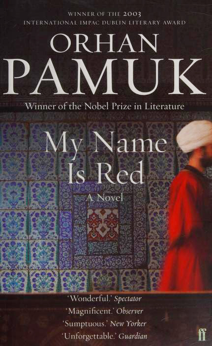
My Name Is Red Orhan Pamuk
A murdered miniaturist exposes artistic rivalries and religious tensions in the Ottoman sultan’s workshop.
Art & literature Faith & doubt
Snow Orhan Pamuk
A returning poet encounters love and political turmoil in a remote Turkish town.
Power & politics Faith & doubt
Madonna in a Fur Coat Sabahattin Ali
A Turkish man falls in love with an independent artist in 1920s Berlin.
Love & relationships Identity & belonging
Memed, My Hawk Yaşar Kemal
A young Turkish serf becomes an outlaw challenging the powerful men who oppressed him.
Class & society Love & relationships
Turkmenistan
Cover Book and links Themes and reading notes
The Tale of Aypi Ak Welsapar
Turkmen fishermen resist the threatened confiscation of their ancestral village on the Caspian coast.
Power & politics Myth & folklore
Cobra Ak Welsapar
A dictator’s words and actions expose the fears and distortions of absolute power.
Power & politics Myth & folklore
Uzbekistan
Cover Book and links Themes and reading notes
Bygone Days Abdulla Qodiriy
Otabek and Kumush’s love confronts family expectations and social tensions in nineteenth-century Central Asia.
Family Tradition & change
Night and Day Abdulhamid Cho'lpon
A young Uzbek woman’s fate exposes restrictive traditions and a society struggling towards change.
Gender & sexuality Colonialism
The Railway Hamid Ismailov
A Silk Route town’s eccentric inhabitants reveal the contradictions of Soviet Central Asian life.
Power & politics Satire
The Devils' Dance Hamid Ismailov
An imprisoned Uzbek writer mentally reconstructs a historical novel while enduring Stalinist interrogation.
Art & literature Power & politics
The Dead Lake Hamid Ismailov
A Kazakh boy’s forbidden swim exposes the lasting human consequences of Soviet nuclear testing.
Nature & environment Coming of age
Vietnam
Cover Book and links Themes and reading notes
The Sorrow of War Bảo Ninh
A Vietnamese veteran searches for fallen soldiers while struggling to understand his own wartime past.
War & conflict Memory & loss
Paradise of the Blind Dương Thu Hương
Three Vietnamese women’s intertwined lives reveal family obligations, gender constraints and communist corruption.
Family Gender & sexuality
Novel Without a Name Dương Thu Hương
A North Vietnamese soldier’s fading idealism exposes the distance between revolutionary promises and war.
War & conflict Power & politics
The Mountains Sing Nguyễn Phan Quế Mai
A Vietnamese family’s generations endure displacement, political upheaval and the devastations of war.
Family War & conflict
The Sympathizer Viet Thanh Nguyen
A communist double agent’s divided loyalties turn exile into a struggle over identity and betrayal.
Migration & exile Identity & belonging
Africa
Algeria
Cover Book and links Themes and reading notes
Fantasia: An Algerian Cavalcade Assia Djebar
An Algerian girl’s life intertwines with women’s experiences of conquest and the independence struggle.
Gender & sexuality Colonialism
Children of the New World Assia Djebar
Women in an Algerian town find solidarity and differing paths into the independence struggle.
Gender & sexuality Colonialism
Nedjma Kateb Yacine
An elusive woman becomes the focus of desire, memory and Algeria’s search for itself.
History & heritage Love & relationships
The Meursault Investigation Kamel Daoud
The brother of Camus’s unnamed victim gives the murdered man a name and history.
Colonialism Identity & belonging
The Swallows of Kabul Yasmina Khadra
Two couples’ lives converge under Taliban rule, exposing cruelty, confinement and precarious hope.
Power & politics Faith & doubt
Angola
Cover Book and links Themes and reading notes
A General Theory of Oblivion José Eduardo Agualusa
An agoraphobic woman walls herself inside her apartment on the eve of Angolan independence.
Freedom & confinement Power & politics
The Book of Chameleons José Eduardo Agualusa
A man sells invented pasts to Angolan clients, observed by his articulate house lizard.
Identity & belonging Memory & loss
Mayombe Pepetela
Love and divided loyalties expose tensions inside an Angolan guerrilla movement’s forest base.
War & conflict Love & relationships
Good Morning Comrades Ondjaki
A Luanda schoolboy’s ordinary mischief unfolds amid Cuban teachers and Angola’s socialist ambitions.
Coming of age Power & politics
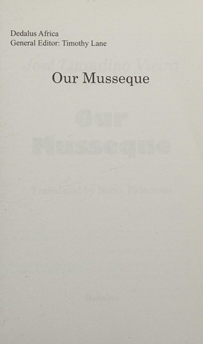
Our Musseque José Luandino Vieira
Childhood memories reconstruct a Luanda neighbourhood as Angola approaches its struggle for independence.
Coming of age Colonialism
Benin
Cover Book and links Themes and reading notes
Snares Without End Olympe Bhêly-Quenum
A man fleeing a jealous marriage becomes trapped in wandering, misfortune and injustice.
Love & relationships Mystery & crime
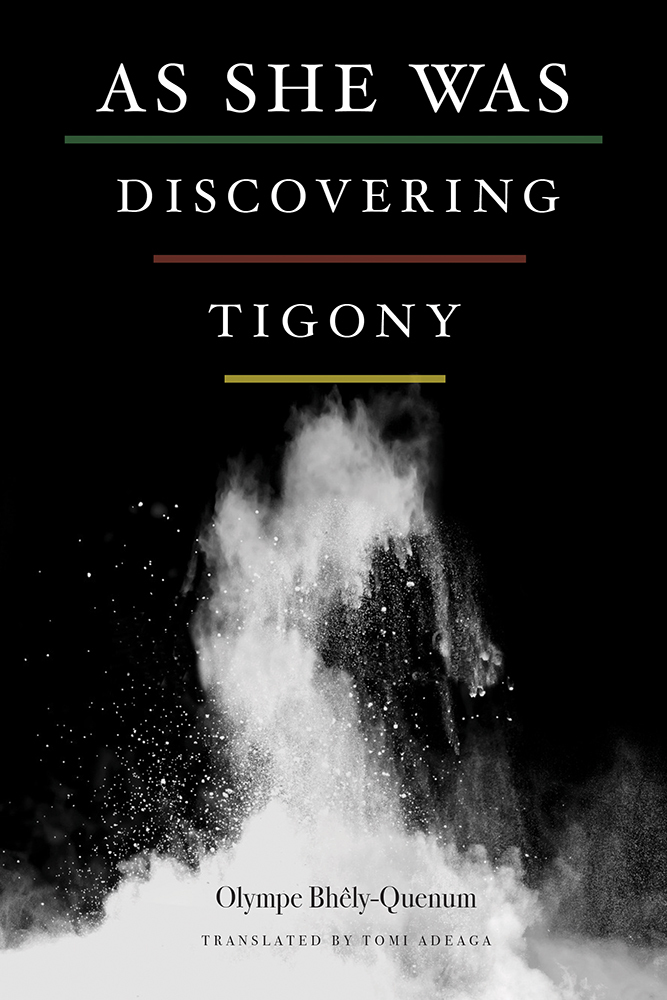
As She Was Discovering Tigony Olympe Bhêly-Quenum
A white geophysicist’s African assignment entangles an affair with the politics of mineral exploitation.
Colonialism Power & politics
Guinea-Bissau
Cover Book and links Themes and reading notes
The Ultimate Tragedy Abdulai Silá
A village woman’s search for work intersects with awakening resistance to Portuguese colonial rule.
Colonialism Gender & sexuality
Botswana
Cover Book and links Themes and reading notes
A Question of Power Bessie Head
A mixed-race exile confronts psychological torment and the inherited stigma surrounding her origins.
Identity & belonging Migration & exile
When Rain Clouds Gather Bessie Head
Exiles in a Botswanan village attempt agricultural reform against entrenched authority and harsh conditions.
Nature & environment Tradition & change
Maru Bessie Head
An orphaned Masarwa teacher’s arrival exposes prejudice and exclusion in a Botswanan village.
Identity & belonging Class & society
The Screaming of the Innocent Unity Dow
A discovery challenges the official explanation for a young girl’s disappearance years earlier.
Mystery & crime Power & politics
Far and Beyon' Unity Dow
A Botswanan family confronts AIDS, grief and conflicting beliefs about tradition and change.
Family Tradition & change
Burkina Faso
Cover Book and links Themes and reading notes
The Parachute Drop Norbert Zongo
An imagined West African nation exposes the greed and destructive energies of its president.
Power & politics
Burundi
Cover Book and links Themes and reading notes
Baho! Roland Rugero
A mute Burundian teenager’s misunderstood gestures trigger a pursuit driven by suspicion and mob justice.
Mystery & crime Class & society
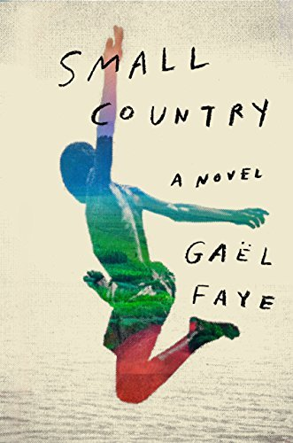
Small Country Gaël Faye
A boy’s carefree Bujumbura childhood is shattered by regional violence and family divisions.
Coming of age War & conflict
Comoros
Cover Book and links Themes and reading notes
A Girl Called Eel Ali Zamir
A Comorian teenager adrift at sea recounts her life while confronting approaching death.
Memory & loss Narrative experiment
Chad
Cover Book and links Themes and reading notes
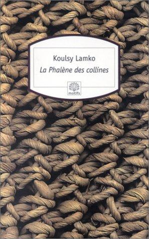
La phalène des collines Koulsy Lamko
French · English edition not verified
The aftermath of Rwanda’s genocide haunts a narrative of memory and unresolved violence.
War & conflict Memory & loss
South Africa
Starting point: Nadine Gordimer — July's People
Cover Book and links Themes and reading notes
Disgrace J. M. Coetzee
A disgraced professor’s fall exposes desire, responsibility and uneasy relations in post-apartheid South Africa.
Gender & sexuality Family
Waiting for the Barbarians J. M. Coetzee
A frontier magistrate’s sympathy for tortured prisoners turns him against the empire he serves.
Power & politics Colonialism
July's People Nadine Gordimer
Starting point
A white South African family seeks refuge with their servant as familiar power relations shift.
Family Class & society
The Promise Damon Galgut
A broken promise to a Black domestic worker haunts generations of a white farming family.
Family Class & society
Cry, the Beloved Country Alan Paton
A Zulu pastor’s relationship with his son reveals the human consequences of racial injustice.
Family Class & society
South Sudan
Cover Book and links Themes and reading notes
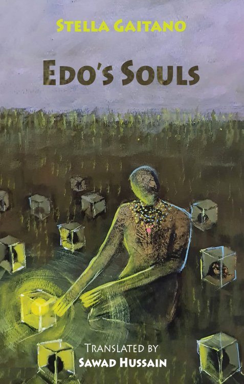
Edo's Souls Stella Gaitano
Three generations face the competing claims of love, family and country amid civil war.
Family War & conflict
Djibouti
Cover Book and links Themes and reading notes
In the United States of Africa Abdourahman A. Waberi
A reversed world sends impoverished Europeans and Americans seeking refuge in prosperous African countries.
Migration & exile Satire
Passage of Tears Abdourahman A. Waberi
A Djiboutian exile returns for an American intelligence assignment as a threatening presence watches.
Migration & exile Power & politics
Transit Abdourahman A. Waberi
Two Djiboutian migrants waiting at a Paris airport recount lives shaped by violence and displacement.
Migration & exile War & conflict
Equatorial Guinea
Cover Book and links Themes and reading notes
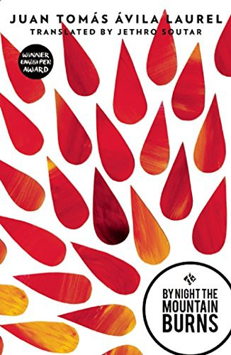
By Night the Mountain Burns Juan Tomás Ávila Laurel
An islander recalls a childhood marked by family mysteries, crop destruction and epidemic disease.
Coming of age Family
Shadows of Your Black Memory Donato Ndongo
A boy’s childhood reveals tensions between ancestral beliefs and Catholicism in colonial Equatorial Guinea.
Coming of age Colonialism
La Bastarda Trifonia Melibea Obono
An orphan’s search for her father leads towards forbidden love and a community of outcasts.
Gender & sexuality Identity & belonging
Egypt
Starting point: Naguib Mahfouz — Palace Walk
Cover Book and links Themes and reading notes
Palace Walk Naguib Mahfouz
Starting point
A domineering Cairo patriarch’s strict household contrasts with his secret life of indulgence.
Family Gender & sexuality
Midaq Alley Naguib Mahfouz
The intertwined ambitions of a Cairo alley’s residents reveal desire, poverty and exploitation.
Class & society Tradition & change
Woman at Point Zero Nawal El Saadawi
An imprisoned Egyptian woman recounts a lifetime of abuse, exploitation and resistance.
Gender & sexuality Class & society
Beer in the Snooker Club Waguih Ghali
Two friends’ nostalgia for London exposes their uneasy place in Nasser’s changing Egypt.
Identity & belonging Power & politics
Granada Radwa Ashour
A Muslim family struggles to preserve its culture after the conquest of Granada.
Family History & heritage
Côte d'Ivoire
Cover Book and links Themes and reading notes
Allah Is Not Obliged Ahmadou Kourouma
An orphaned Ivorian boy’s search for his aunt draws him into child soldiering.
Coming of age War & conflict
The Suns of Independence Ahmadou Kourouma
A dispossessed prince and his wife confront the disappointments of post-independence West Africa.
Colonialism Power & politics
Waiting for the Wild Beasts to Vote Ahmadou Kourouma
A storyteller recounts a dictator’s violent rise through hunting, warfare and political reinvention.
Power & politics Satire
Standing Heavy GauZ'
Three African security guards’ working lives illuminate migration and shifting Franco-African relations.
Migration & exile Class & society
Far from My Father Véronique Tadjo
A woman returning for her father’s funeral confronts family secrets and unresolved tensions.
Family Memory & loss
Eritrea
Cover Book and links Themes and reading notes
The Conscript Gebreyesus Hailu
An Eritrean conscript confronts the irony of fighting other colonised people for Italy.
Colonialism War & conflict
Silence Is My Mother Tongue Sulaiman Addonia
A young refugee protects her mute brother while building a life inside a camp.
Migration & exile Gender & sexuality
The Consequences of Love Sulaiman Addonia
A young immigrant and a veiled woman risk punishment through their forbidden relationship.
Migration & exile Love & relationships
The Seers Sulaiman Addonia
A newly arrived Eritrean refugee’s first weeks in London unfold through intimate, precarious encounters.
Migration & exile Gender & sexuality
Ethiopia
Cover Book and links Themes and reading notes
The Shadow King Maaza Mengiste
Ethiopian women seek a role beyond caregiving as Mussolini’s army threatens their country.
Gender & sexuality War & conflict
Beneath the Lion's Gaze Maaza Mengiste
An Ethiopian doctor and his family confront violence on the eve of revolution.
Family Power & politics
The Beautiful Things That Heaven Bears Dinaw Mengestu
An Ethiopian shopkeeper in Washington finds tentative connection amid isolation and memories of exile.
Migration & exile Friendship
All Our Names Dinaw Mengestu
A Ugandan refugee’s American love affair is shadowed by secrets of war and friendship.
Migration & exile Love & relationships
Cutting for Stone Abraham Verghese
Twin brothers drawn to medicine navigate family secrets and Ethiopia’s approaching revolution.
Family Migration & exile
Eswatini
Cover Book and links Themes and reading notes
Pains of a Maid Sarah Mkhonza
An interracial relationship confronts apartheid law and the social barriers surrounding intimate life.
Love & relationships Class & society
Gabon
Cover Book and links Themes and reading notes
Awu's Story Justine Mintsa
A Gabonese seamstress’s marriage exposes tensions between personal longing and changing village traditions.
Gender & sexuality Tradition & change
Mema Daniel Mengara
A woman challenges her community’s constraints as the surrounding culture undergoes profound change.
Gender & sexuality Tradition & change
The Fury and Cries of Women Angèle Rawiri
A modern Gabonese woman questions inherited values while seeking freedom in her own life.
Gender & sexuality Family
Gambia
Cover Book and links Themes and reading notes
Chaff on the Wind Ebou Dibba
Two Gambian youths leave their village for the city, meeting contrasting opportunities and temptations.
Coming of age Class & society
Fafa Ebou Dibba
A shy Gambian man’s wish to marry encounters poverty, differing expectations and ingenious friends.
Love & relationships Friendship
Reading the Ceiling Dayo Forster
A Gambian woman’s choices about love carry consequences across several countries and possible futures.
Love & relationships Gender & sexuality
Ghana
Starting point: Ayi Kwei Armah — The Beautyful Ones Are Not Yet Born
Cover Book and links Themes and reading notes
The Beautyful Ones Are Not Yet Born Ayi Kwei Armah
Starting point
A Ghanaian railway clerk resists the corruption surrounding his work and family life.
Power & politics
Changes: A Love Story Ama Ata Aidoo
A professional Ghanaian woman questions marriage and the expectations placed on modern women.
Gender & sexuality Love & relationships
Homegoing Yaa Gyasi
Two Ghanaian half sisters’ descendants inherit contrasting legacies of slavery across generations and continents.
Family Colonialism
Fragments Ayi Kwei Armah
A returning Ghanaian artist struggles against his family’s expectations of wealth and influence.
Art & literature Family
The Hundred Wells of Salaga Ayesha Harruna Attah
An enslaved woman’s fate intersects with a chief’s daughter amid regional power struggles.
Class & society Power & politics
Guinea
Cover Book and links Themes and reading notes
The Radiance of the King Camara Laye
A destitute European seeks salvation through service to an elusive African king.
Identity & belonging
Saint Monsieur Baly Williams Sassine
A retired teacher spends his pension building a school for poor village children.
Class & society
The Oldest Orphan Tierno Monénembo
A Rwandan adolescent on death row recounts memories shadowed by the genocide.
War & conflict Memory & loss
The King of Kahel Tierno Monénembo
A French adventurer pursues an empire of his own in the highlands of Guinea.
Colonialism Power & politics
The Black Terrorist Tierno Monénembo
A Guinean soldier’s experiences in wartime France reveal an overlooked history of resistance.
War & conflict Memory & loss
Cameroon
Cover Book and links Themes and reading notes
The Poor Christ of Bomba Mongo Beti
A missionary’s efforts to save souls expose Catholic hypocrisy in colonial Cameroon.
Colonialism Faith & doubt
Mission to Kala Mongo Beti
A young man sent to retrieve a runaway wife encounters unexpected village adventures.
Coming of age Tradition & change
Houseboy Ferdinand Oyono
A Cameroonian houseboy’s diary reveals the illusions and hypocrisies of colonial white society.
Colonialism Class & society
The Sun Hath Looked Upon Me Calixthe Beyala
A young African woman confronts abandonment and male domination amid urban poverty and prostitution.
Gender & sexuality Class & society
Days Come and Go Hemley Boum
Three generations of Cameroonian women navigate separation, changing loyalties and a rapidly transforming country.
Family Tradition & change
Kenya
Starting point: Ngũgĩ wa Thiong'o — A Grain of Wheat
Cover Book and links Themes and reading notes
A Grain of Wheat Ngũgĩ wa Thiong'o
Starting point
A Kenyan community approaches independence carrying memories and unresolved tensions from the colonial struggle.
Colonialism Memory & loss
Petals of Blood Ngũgĩ wa Thiong'o
A village murder investigation exposes intertwined lives and the disappointments of independent Kenya.
Mystery & crime Power & politics
Wizard of the Crow Ngũgĩ wa Thiong'o
An unemployed man’s unexpected role challenges a megalomaniac dictator in an invented African republic.
Power & politics Satire
Dust Yvonne Adhiambo Owuor
A young man’s killing draws his Kenyan family back into buried histories of violence.
Family Memory & loss
The Promised Land Grace Ogot
A Kenyan couple’s migration to Tanzania exposes jealousy, material ambition and communal tensions.
Migration & exile Love & relationships
Democratic Republic of the Congo
Cover Book and links Themes and reading notes
Tram 83 Fiston Mwanza Mujila
A writer and a racketeer converge in a nightclub amid an African gold rush.
Art & literature Class & society
The Villain's Dance Fiston Mwanza Mujila
Street children seek opportunities in a Zairean city as Mobutu’s rule begins to crumble.
Coming of age Class & society
Between Tides Valentin-Yves Mudimbe
An African Catholic priest joins rebels while struggling to reconcile faith and political responsibility.
Faith & doubt Identity & belonging
Full Circle Frederick Yamusangie
A boy’s arrival in a Congolese town opens an unfamiliar world beyond Kinshasa.
Coming of age
The Rift Valentin-Yves Mudimbe
A young African historian’s notebooks reveal an increasingly troubled struggle with knowledge and identity.
Art & literature Identity & belonging
Republic of the Congo
Cover Book and links Themes and reading notes
Broken Glass Alain Mabanckou
A former teacher records the competing stories of patrons in a Congolese bar.
Art & literature Satire
Memoirs of a Porcupine Alain Mabanckou
A Congolese legend of animal doubles unfolds through an unusually articulate porcupine’s recollections.
Myth & folklore
Black Moses Alain Mabanckou
A boy’s life begins inside a politically controlled orphanage in 1970s Congo-Brazzaville.
Coming of age Power & politics
Life and a Half Sony Labou Tansi
A grotesque dictatorship’s violence meets resistance in the struggle for an imaginary African nation.
Power & politics Satire
Johnny Mad Dog Emmanuel Dongala
A teenage rebel and a schoolgirl’s paths converge amid civil war’s destructive chaos.
Coming of age War & conflict
Central African Republic
Cover Book and links Themes and reading notes
Co-wives, Co-widows Adrienne Yabouza
Two Central African widows fight for their families’ security after their husband’s sudden death.
Family Gender & sexuality
Lesotho
Cover Book and links Themes and reading notes
Chaka Thomas Mofolo
A fictionalised Shaka’s rise from persecuted childhood to kingship explores ambition and power.
Power & politics History & heritage
How We Buried Puso Morabo Morojele
An exile’s wry observations explore belonging, community and the lasting effects of dispossession.
Identity & belonging Power & politics
Blanket Boy's Moon A. S. Mopeli-Paulus and Peter Lanham
A migrant labourer’s return to Lesotho draws him into suspicion surrounding a ritual killing.
Migration & exile Gender & sexuality
Liberia
Cover Book and links Themes and reading notes
The Land of the Fathers Vamba Sherif
Liberia’s local inhabitants and returning descendants of enslaved people negotiate an uneasy shared history.
Colonialism Identity & belonging
Bound to Secrecy Vamba Sherif
A stranger’s secret investigation into a missing chief encounters suspicion and unstable political power.
Mystery & crime Power & politics
She Would Be King Wayétu Moore
Three extraordinary lives reshape the story of Liberia’s founding through history and magical realism.
History & heritage Myth & folklore
The Lazarus Effect Hawa Jande Golakai
A Cape Town journalist’s investigation into a missing girl unravels two families’ secrets.
Mystery & crime Family
The Rain and the Night Wilton Sankawulo
A newly appointed chief’s campaign against a rival community entangles warfare and spiritual leadership.
War & conflict
Libya
Cover Book and links Themes and reading notes
In the Country of Men Hisham Matar
A Libyan boy senses concealed dangers beneath his parents’ troubled lives in 1979 Tripoli.
Coming of age Power & politics
Anatomy of a Disappearance Hisham Matar
A boy’s grief and fascination with his father’s new partner unsettle their family life.
Family Memory & loss
My Friends Hisham Matar
Three Libyan friends navigate political exile and the sustaining, complicated bonds between them.
Migration & exile Friendship
The Bleeding of the Stone Ibrahim al-Koni
A desert guardian and endangered wild sheep confront hunters in southern Libya’s mountains.
Nature & environment
Gold Dust Ibrahim al-Koni
An outcast and his prized camel flee across a Sahara marked by war and famine.
Nature & environment Friendship
Madagascar
Cover Book and links Themes and reading notes
Beyond the Rice Fields Naivo
A slave and his master’s daughter navigate love and upheaval in nineteenth-century Madagascar.
Love & relationships Class & society
Nour, 1947 Raharimanana
Seven nights of recollection confront Madagascar’s history and the violent suppression of its 1947 uprising.
Colonialism Memory & loss
Malawi
Cover Book and links Themes and reading notes
No Easy Task Aubrey Kachingwe
A young journalist is drawn into an independence struggle through his father’s political rise.
Power & politics
Mali
Cover Book and links Themes and reading notes
The Fortunes of Wangrin Amadou Hampâté Bâ
A resourceful African interpreter manipulates both French colonial officials and his own community.
Colonialism Satire
Bound to Violence Yambo Ouologuem
An imaginary empire’s long history exposes dynastic brutality, exploitation and the persistence of violence.
Power & politics Satire
The Lieutenant of Kouta Massa Makan Diabaté
A decorated African veteran returns from European battlefields to a changing village community.
Identity & belonging Tradition & change
Morocco
Cover Book and links Themes and reading notes
The Sand Child Tahar Ben Jelloun
A Moroccan father raises his eighth daughter as a son to protect his inheritance.
Gender & sexuality Family
This Blinding Absence of Light Tahar Ben Jelloun
Prisoners in a Moroccan desert camp seek inner survival amid darkness and deprivation.
Power & politics Freedom & confinement
The Simple Past Driss Chraïbi
A young Moroccan confronts his wealthy father’s religious authority and violent control.
Family Faith & doubt
In the Country of Others Leila Slimani
A French woman’s marriage takes her to a Moroccan farm after the Second World War.
Migration & exile Gender & sexuality
An Arab Melancholia Abdellah Taïa
A gay Arab man seeks identity through love, writing and life between cultures.
Gender & sexuality Identity & belonging
Mauritania
Cover Book and links Themes and reading notes
The Desert and the Drum Beyrouk
A Bedouin woman’s encounter with an outsider drives her from her Mauritanian community.
Identity & belonging Tradition & change
I'm Alone Beyrouk
A man’s solitary confinement becomes an inward reckoning amid the threat of religious fanaticism.
Power & politics
Mauritius
Cover Book and links Themes and reading notes
Eve Out of Her Ruins Ananda Devi
Four young Mauritians seek escape from a neighbourhood shaped by poverty, fear and violence.
Coming of age Class & society
The Last Brother Nathacha Appanah
A Mauritian boy’s harsh childhood intersects with a wartime prison camp on his island.
War & conflict Friendship
The Sky Above the Roof Nathacha Appanah
A teenager’s search for his estranged sister exposes the fractures within his family.
Family Memory & loss
The Rape of Sita Lindsey Collen
One woman’s experience of sexual violence reveals a wider history of repression and resistance.
Gender & sexuality Memory & loss
Benares Barlen Pyamootoo
A card-game windfall sends two Mauritian friends towards the city in search of women.
Friendship Travel
Mozambique
Starting point: Mia Couto — Sleepwalking Land
Cover Book and links Themes and reading notes
Sleepwalking Land Mia Couto
Starting point
An old man and a boy find refuge and another life’s notebooks in wartime Mozambique.
War & conflict Art & literature
Under the Frangipani Mia Couto
A dead man’s spirit enters a police inspector investigating a strange Mozambican murder.
Mystery & crime Myth & folklore
Confession of the Lioness Mia Couto
Lion attacks on a Mozambican village expose women’s suffering and the violence beneath tradition.
Gender & sexuality Myth & folklore
The First Wife Paulina Chiziane
A wife discovers her husband’s four other households and challenges his comfortable arrangement.
Gender & sexuality Love & relationships
Ualalapi Ungulani Ba Ka Khosa
Competing voices reconstruct the violent reign of Mozambique’s last Gaza emperor, Ngungunhane.
Power & politics History & heritage
Namibia
Cover Book and links Themes and reading notes
The Purple Violet of Oshaantu Neshani Andreas
A Namibian widow’s response to her abusive husband’s death challenges village expectations.
Gender & sexuality Friendship
Born of the Sun Joseph Diescho
A Namibian villager’s family life is transformed by missionaries and colonial economic pressures.
Colonialism Family
Troubled Waters Joseph Diescho
A Namibian teacher’s relationship with a South African soldier crosses apartheid’s political and racial divisions.
Love & relationships Power & politics
Niger
Cover Book and links Themes and reading notes
Sarraounia Abdoulaye Mamani
French · English edition not verified
A queen leads resistance to a French colonial expedition in present-day Niger.
Colonialism War & conflict
Nigeria
Starting point: Chinua Achebe — Things Fall Apart
Cover Book and links Themes and reading notes
Things Fall Apart Chinua Achebe
Starting point
An Igbo leader’s struggle with change unfolds as colonial power enters his community.
Colonialism Tradition & change
Efuru Flora Nwapa
A respected Igbo woman endures marital abandonment while seeking purpose beyond conventional expectations.
Gender & sexuality Love & relationships
The Joys of Motherhood Buchi Emecheta
A Nigerian mother struggles with poverty, patriarchy and changing expectations in urban Lagos.
Family Gender & sexuality
The Famished Road Ben Okri
A spirit child navigates poverty and injustice between human life and a supernatural world.
Myth & folklore Class & society
Americanah Chimamanda Ngozi Adichie
Nigerian lovers’ separate migrations test their relationship and transform their understanding of race.
Migration & exile Identity & belonging
Rwanda
Cover Book and links Themes and reading notes
Our Lady of the Nile Scholastique Mukasonga
An elite Rwandan girls’ school becomes a microcosm of growing prejudice and exclusion.
Coming of age Power & politics
Kibogo Scholastique Mukasonga
Rwandan storytelling pits ancestral beliefs against the missionaries determined to replace them.
Faith & doubt Colonialism
The Past Ahead Gilbert Gatore
A returning Rwandan exile uses fiction to confront memories and the aftermath of genocide.
War & conflict Memory & loss
São Tomé and Príncipe
Cover Book and links Themes and reading notes
15 Dias de Regresso Olinda Beja
Portuguese · English edition not verified
A return to São Tomé reconnects a mother and daughter long separated by migration.
Family Migration & exile
Senegal
Cover Book and links Themes and reading notes
So Long a Letter Mariama Bâ
A Senegalese widow’s letter recounts her struggle to rebuild life after loss.
Gender & sexuality Love & relationships
Ambiguous Adventure Cheikh Hamidou Kane
A Senegalese student’s education in Paris unsettles his relationship with Islamic belief and home.
Faith & doubt Identity & belonging
God's Bits of Wood Ousmane Sembène
West African railway workers and their communities confront colonial authority through a prolonged strike.
Colonialism Class & society
Murambi, The Book of Bones Boubacar Boris Diop
A returning Rwandan teacher investigates his family’s deaths and the responsibility to remember genocide.
War & conflict Memory & loss
The Belly of the Atlantic Fatou Diome
A Senegalese migrant struggles to explain France’s harsh realities to her hopeful younger brother.
Migration & exile Family
Seychelles
Cover Book and links Themes and reading notes
Kolony Glynn Burridge
Travellers on a remote Seychellois atoll encounter a pirate cult surviving into the present.
Mystery & crime
Sierra Leone
Cover Book and links Themes and reading notes
The Memory of Love Aminatta Forna
Lives converging in a Sierra Leonean hospital expose secrets left by civil war.
War & conflict Memory & loss
Ancestor Stones Aminatta Forna
Returning to a family plantation, a woman discovers Sierra Leone’s history through women’s memories.
Family Memory & loss
Radiance of Tomorrow Ishmael Beah
Two teachers return to their ruined Sierra Leonean hometown, hoping to rebuild a community.
War & conflict Friendship
Road to Freedom Yema Lucilda Hunter
Formerly enslaved people’s pursuit of freedom unfolds within the historical world of Sierra Leone.
History & heritage Migration & exile
Happiness Aminatta Forna
A fox researcher and a psychiatrist’s chance meeting opens unexpected connections across London.
Friendship Nature & environment
Somalia
Cover Book and links Themes and reading notes
Maps Nuruddin Farah
An orphan raised by an outsider grows up amid conflict and contested belonging.
Coming of age Identity & belonging
From a Crooked Rib Nuruddin Farah
A young Somali woman flees an arranged marriage, seeking control over her own life.
Gender & sexuality Freedom & confinement
Sweet and Sour Milk Nuruddin Farah
A man investigates his twin brother’s death under a repressive Somali dictatorship.
Mystery & crime Power & politics
Secrets Nuruddin Farah
A returning childhood love unsettles a Somali man’s understanding of his family’s past.
Family Memory & loss
The Orchard of Lost Souls Nadifa Mohamed
Three women’s lives intersect as Hargeisa faces the collapse of Somalia’s fragile order.
Gender & sexuality War & conflict
Sudan
Starting point: Tayeb Salih — Season of Migration to the North
Cover Book and links Themes and reading notes
Season of Migration to the North Tayeb Salih
Starting point
A Sudanese man’s encounters in London expose desire and the destructive legacies of colonialism.
Colonialism Love & relationships
The Wedding of Zein Tayeb Salih
A village is astonished when its unlikely bridegroom becomes the subject of competing stories.
Love & relationships Tradition & change
The Translator Leila Aboulela
A grieving Sudanese translator in Scotland finds love that raises questions of faith and belonging.
Love & relationships Faith & doubt
Minaret Leila Aboulela
A formerly privileged Sudanese woman working in London finds new meaning in religious practice.
Migration & exile Faith & doubt
The Messiah of Darfur Abdelaziz Baraka Sakin
A Darfuri woman’s pursuit of revenge intersects with soldiers, militias and a mysterious messiah.
War & conflict Love & relationships
Tanzania
Starting point: Abdulrazak Gurnah — Paradise
Cover Book and links Themes and reading notes
Paradise Abdulrazak Gurnah
Starting point
A boy sold into a merchant’s service discovers the contradictions of colonial East Africa.
Colonialism Coming of age
By the Sea Abdulrazak Gurnah
An ageing Zanzibari asylum seeker arrives in Britain carrying the remnants of an earlier life.
Migration & exile Memory & loss
Afterlives Abdulrazak Gurnah
German colonial warfare shapes lives marked by displacement and the search for home.
Colonialism Migration & exile
Desertion Abdulrazak Gurnah
An interracial romance on the East African coast exposes the enduring consequences of colonial boundaries.
Colonialism Love & relationships
Vuta N'kuvute Adam Shafi
A young woman leaves an arranged marriage and seeks shelter beyond her family’s expectations.
Love & relationships Colonialism
Togo
Cover Book and links Themes and reading notes
The Continent of Everything and Practically Nothing Sami Tchak
A French ethnologist’s work in Togo reshapes his ambitions and assumptions about Africa.
Colonialism Identity & belonging
Tunisia
Cover Book and links Themes and reading notes
The Scents of Marie-Claire Habib Selmi
The intimate routines of a relationship trace love’s pleasures, irritations and gradual transformations.
Love & relationships
A Tunisian Tale Hassouna Mosbahi
Rumours about a widowed mother drive her son towards a terrible crime.
Family Mystery & crime
The Italian Shukri Mabkhout
A shocking act at a funeral prompts a friend to reconstruct a Tunisian rebel’s life.
Power & politics Memory & loss
The Ardent Swarm Yamen Manai
A beekeeper’s threatened hives become entangled with the forces transforming a post-revolutionary country.
Nature & environment Power & politics
Talismano Abdelwahab Meddeb
A wandering narrator moves through remembered and imagined cities in a hallucinatory literary journey.
Memory & loss Narrative experiment
Uganda
Cover Book and links Themes and reading notes
Kintu Jennifer Nansubuga Makumbi
A Ugandan clan’s descendants struggle with an ancestral curse and their shared history.
Family Myth & folklore
The First Woman Jennifer Nansubuga Makumbi
A Ugandan girl’s coming of age becomes a search for her absent mother.
Coming of age Family
Abyssinian Chronicles Moses Isegawa
An extended Ugandan family’s experiences unfold amid Idi Amin’s terror and shifting traditions.
Family Power & politics
Snakepit Moses Isegawa
Lives near the end of Idi Amin’s dictatorship unravel through suspicion, betrayal and pervasive violence.
Power & politics
Waiting Goretti Kyomuhendo
A young Ugandan woman confronts uncertainty and violence as Idi Amin’s dictatorship collapses.
Power & politics Family
Zambia
Cover Book and links Themes and reading notes
The Old Drift Namwali Serpell
Three Zambian families’ intertwined generations trace a nation’s history and possible futures.
Family History & heritage
The Tongue of the Dumb Dominic Mulaisho
A Zambian village’s rivalries expose conflicts between traditional authority, missionaries and colonial influence.
Colonialism Tradition & change
Patchwork Ellen Banda-Aaku
A Zambian girl’s protected world fractures when her father discovers her mother’s alcoholism.
Coming of age Family
Zimbabwe
Starting point: Tsitsi Dangarembga — Nervous Conditions
Cover Book and links Themes and reading notes
Nervous Conditions Tsitsi Dangarembga
Starting point
A Zimbabwean girl’s pursuit of education exposes new conflicts within her extended family.
Coming of age Family
The House of Hunger Dambudzo Marechera
A novella and stories explore poverty, violence and alienation in a Zimbabwean township.
Identity & belonging
We Need New Names NoViolet Bulawayo
A Zimbabwean girl’s migration to America brings freedom, dislocation and a changed sense of home.
Migration & exile Coming of age
The Stone Virgins Yvonne Vera
Zimbabwe’s hard-won independence gives way to violence, exposing the intimate costs of civil conflict.
War & conflict Power & politics
Harvest of Thorns Shimmer Chinodya
A young man’s coming of age unfolds between competing beliefs in a turbulent society.
War & conflict Power & politics
Cabo Verde
Cover Book and links Themes and reading notes
The Last Will and Testament of Senhor da Silva Araújo Germano Almeida
A respected Cape Verdean businessman’s lengthy will reveals secrets that overturn his carefully maintained reputation.
Identity & belonging Class & society
The Madwoman of Serrano Dina Salústio
An isolated Cape Verdean village’s supposed madwoman unsettles assumptions about women, progress and belonging.
Gender & sexuality Identity & belonging
The Americas
United States
Starting point: John Steinbeck — East of Eden
Cover Book and links Themes and reading notes
East of Eden John Steinbeck
Starting point
Two Californian families’ intertwined generations replay struggles over inheritance, love and destructive sibling rivalry.
Family
As I Lay Dying William Faulkner
A Mississippi family’s journey to bury their mother reveals competing voices and private motives.
Family Memory & loss
Beloved Toni Morrison
An escaped slave’s Ohio household is haunted by a past that refuses to disappear.
Memory & loss Freedom & confinement
Gilead Marilynne Robinson
An ageing minister writes to his young son about faith, family and inherited conflicts.
Faith & doubt Family
The Heart Is a Lonely Hunter Carson McCullers
Lonely residents of a Southern town seek understanding through a quiet, sympathetic man.
Identity & belonging
Antigua and Barbuda
Cover Book and links Themes and reading notes
Annie John Jamaica Kincaid
A Caribbean girl’s adolescence transforms her once inseparable relationship with her beloved mother.
Coming of age Family
Lucy Jamaica Kincaid
A Caribbean au pair in North America questions her employers’ apparent happiness and her independence.
Migration & exile Identity & belonging
The Autobiography of My Mother Jamaica Kincaid
A Dominican woman born into maternal loss recounts a life shaped by desire and isolation.
Gender & sexuality Identity & belonging
Unburnable Marie-Elena John
A woman’s return to Dominica reopens the family scandals that drove her away.
Family Memory & loss
Oh Gad! Joanne C. Hillhouse
An Antiguan woman confronts family loyalties and the uncertain meaning of returning home.
Family Identity & belonging
Bahamas
Cover Book and links Themes and reading notes
God's Angry Babies Ian Strachan
Four brothers grow up in a poor Bahamian neighbourhood hidden from the tourist resorts.
Coming of age Class & society
Thine Is the Kingdom Garth Buckner
A returning islander faces the corrupt demands surrounding his claim to citizenship.
Identity & belonging Class & society
A Shift in the Light Patricia Glinton-Meicholas
A Bahamian family’s changing fortunes illuminate half a century of social and political history.
Coming of age Tradition & change
Barbados
Cover Book and links Themes and reading notes
In the Castle of My Skin George Lamming
A Barbadian boy’s village childhood unfolds beneath colonial authority and the beginnings of change.
Coming of age Colonialism
The Polished Hoe Austin Clarke
A respected island woman’s confession exposes plantation history and the lasting violence of colonialism.
Colonialism Class & society
Song of Night Glenville Lovell
A Barbadian dress seller’s encounter with an American tourist transforms both women’s lives.
Love & relationships Class & society
Redemption in Indigo Karen Lord
A woman leaves her gluttonous husband and receives a spirit’s dangerously powerful gift.
Myth & folklore Love & relationships
How the One-Armed Sister Sweeps Her House Cherie Jones
Lives on a Barbadian beach expose violence and the gulf between tourism and survival.
Class & society Mystery & crime
Belize
Cover Book and links Themes and reading notes
Beka Lamb Zee Edgell
A Belizean girl’s family life intertwines with colonial politics, women’s influence and Catholic authority.
Coming of age Colonialism
In Times Like These Zee Edgell
A woman confronts the unresolved experiences of her past while fighting for an independent future.
Migration & exile Memory & loss
The Festival of San Joaquin Zee Edgell
A Belizean woman leaving prison struggles to regain her children and rebuild her life.
Family Gender & sexuality
Time and the River Zee Edgell
An enslaved woman in Belize seeks freedom while navigating difficult loyalties and choices.
Freedom & confinement Family
Costa Rica
Cover Book and links Themes and reading notes
Mamita Yunai Carlos Luis Fallas
Costa Rican plantation workers confront the harsh labour conditions imposed by the fruit industry.
Class & society
Years Like Brief Days Fabián Dobles
An elderly Costa Rican’s return to his childhood village revives youthful memories and regrets.
Memory & loss Faith & doubt
The Madwoman of Gandoca Anacristina Rossi
A Costa Rican woman fights to protect a wildlife refuge from destructive development.
Nature & environment
There Never Was a Once Upon a Time Carmen Naranjo
Children’s imaginative stories turn everyday difficulties into invented companions and magical possibilities.
Coming of age Narrative experiment
Marcos Ramírez Carlos Luis Fallas
A mischievous Costa Rican boy discovers friendship, hardship and the contradictions of adult life.
Coming of age
Dominica
Cover Book and links Themes and reading notes
Wide Sargasso Sea Jean Rhys
A Creole heiress’s marriage becomes a struggle over identity, control and accusations of madness.
Identity & belonging Love & relationships
Good Morning, Midnight Jean Rhys
A solitary woman’s painful pursuit of independence unfolds through an intimate, searching confession.
Gender & sexuality
Voyage in the Dark Jean Rhys
A young Caribbean chorus girl encounters loneliness and disillusionment in Edwardian London.
Migration & exile Love & relationships
After Leaving Mr Mackenzie Jean Rhys
A woman abandoned by her lover struggles to survive between Paris and London.
Love & relationships Class & society
The Orchid House Phyllis Shand Allfrey
Three sisters return to a declining Caribbean household, each seeking a different escape.
Family Migration & exile
Dominican Republic
Cover Book and links Themes and reading notes
The Brief Wondrous Life of Oscar Wao Junot Díaz
A Dominican American dreamer’s search for love unfolds beneath a family’s enduring curse.
Love & relationships Myth & folklore
In the Time of the Butterflies Julia Alvarez
The Mirabal sisters’ lives reveal resistance and its human cost under Trujillo’s dictatorship.
Gender & sexuality Power & politics
How the García Girls Lost Their Accents Julia Alvarez
Four Dominican sisters’ interconnected stories trace the losses and discoveries of migration to New York.
Family Migration & exile
Tentacle Rita Indiana
A young Dominican’s transformation becomes entwined with a prophecy to avert ecological catastrophe.
Nature & environment Gender & sexuality
Dominicana Angie Cruz
A Dominican teenager’s migration becomes a search for her own voice and independence.
Migration & exile Coming of age
El Salvador
Cover Book and links Themes and reading notes
Senselessness Horacio Castellanos Moya
Proofreading survivors’ accounts of massacres draws a writer into fear, obsession and moral unease.
War & conflict Art & literature
The Dream of My Return Horacio Castellanos Moya
An exiled journalist’s plans to return to El Salvador unravel through hypnosis and paranoia.
Migration & exile
The She-Devil in the Mirror Horacio Castellanos Moya
A woman’s account of her friend’s murder exposes Salvadoran high society and her own assumptions.
Mystery & crime Class & society
One Day of Life Manlio Argueta
One day in a Salvadoran peasant family’s life reveals civil war’s pervasive terror.
Family War & conflict
Slash and Burn Claudia Hernández
A former rebel’s struggle to protect her daughters continues long after the fighting ends.
Family War & conflict
Grenada
Cover Book and links Themes and reading notes
Angel Merle Collins
A Grenadian woman and her mother navigate political upheaval, divided loyalties and revolution.
Family Power & politics
The Colour of Forgetting Merle Collins
An island community’s stories expose the violence and history that collective memory suppresses.
Memory & loss History & heritage
Pynter Bender Jacob Ross
A boy raised by a close-knit circle of women discovers beauty beyond Grenada’s cane fields.
Coming of age War & conflict
The Bone Readers Jacob Ross
A Caribbean forensic investigator’s work intertwines with his search for his mother’s killers.
Mystery & crime Family
Black Rain Falling Jacob Ross
A Caribbean detective defends a colleague whose claim of self-defence threatens both their careers.
Mystery & crime
Guatemala
Cover Book and links Themes and reading notes
The President Miguel Ángel Asturias
Life under an unnamed dictator exposes the fear and corruption of authoritarian rule.
Power & politics
Men of Maize Miguel Ángel Asturias
Guatemalan lives and myths reveal the struggle between exploitation and a sustaining relationship with land.
Myth & folklore Nature & environment
The African Shore Rodrigo Rey Rosa
Intertwined journeys around Tangier expose the alienation and misrecognition of life far from home.
Migration & exile Identity & belonging
Mourning Eduardo Halfon
A travelling narrator investigates family silences surrounding his uncle’s childhood death by drowning.
Family Memory & loss
Human Matter Rodrigo Rey Rosa
A novelist’s investigation of Guatemala’s police archives exposes the records of state-sponsored terror.
Power & politics History & heritage
Haiti
Cover Book and links Themes and reading notes
Masters of the Dew Jacques Roumain
A returning Haitian villager confronts drought, rural hardship and the search for communal survival.
Nature & environment Class & society
The Farming of Bones Edwidge Danticat
A Haitian woman’s life in the Dominican Republic is shattered by the 1937 massacre.
War & conflict Migration & exile
Moonbath Yanick Lahens
Four generations of Haitian women struggle to sustain family amid poverty and political turmoil.
Family Power & politics
Love, Anger, Madness Marie Vieux-Chauvet
Three novellas explore desire, social divisions and lives constrained by Haiti’s violent dictatorship.
Love & relationships Power & politics
Hadriana in All My Dreams René Depestre
A Haitian bride’s apparent death and resurrection draw her into local legend and collective memory.
Myth & folklore Love & relationships
Honduras
Cover Book and links Themes and reading notes
Prisión verde Ramón Amaya Amador
Honduran banana workers confront exploitation by multinational fruit companies and the damage they leave.
Class & society
Jamaica
Starting point: Marlon James — The Book of Night Women
Cover Book and links Themes and reading notes
The Book of Night Women Marlon James
Starting point
An enslaved Jamaican girl becomes central to women’s secret plans for a plantation revolt.
Gender & sexuality Freedom & confinement
Brother Man Roger Mais
A Rastafarian healer’s integrity is tested by intrigue and betrayal in Kingston’s slums.
Faith & doubt
Augustown Kei Miller
An injustice against a Jamaican schoolboy awakens a community’s memories of oppression and resistance.
Memory & loss Power & politics
Here Comes the Sun Nicole Dennis-Benn
A Jamaican resort worker struggles to secure her sister’s future as development threatens their community.
Class & society Family
Dog-Heart Diana McCaulay
A middle-class Jamaican woman’s effort to help a poor boy exposes complicated inequalities.
Class & society
Canada
Starting point: Robertson Davies — Fifth Business
Cover Book and links Themes and reading notes
As for Me and My House Sinclair Ross
A minister’s wife records a strained marriage in a Depression-era Canadian prairie town.
Love & relationships Art & literature
The Stone Angel Margaret Laurence
A proud ageing woman escapes her nursing home and confronts the life behind her.
Memory & loss Family
Fifth Business Robertson Davies
Starting point
A childhood snowball accident binds a Canadian man to a lifetime of guilt and mystery.
Memory & loss Myth & folklore
In the Skin of a Lion Michael Ondaatje
Immigrants’ labour, love and political struggles shape the making of twentieth-century Toronto.
Migration & exile Class & society
Green Grass, Running Water Thomas King
Indigenous lives and unruly creation stories intertwine, unsettling familiar versions of North American history.
Myth & folklore Tradition & change
Cuba
Cover Book and links Themes and reading notes
The Kingdom of This World Alejo Carpentier
An enslaved man witnesses Haiti’s upheavals as liberation gives way to renewed oppression.
Colonialism Power & politics
The Lost Steps Alejo Carpentier
A disenchanted composer travels upriver in South America, seeking another way to live.
Art & literature Identity & belonging
The Man Who Loved Dogs Leonardo Padura
A Cuban writer’s encounters unravel the histories surrounding Trotsky’s exile and eventual assassination.
Power & politics History & heritage
Three Trapped Tigers Guillermo Cabrera Infante
Voices, jokes and recollections recreate the restless nightlife of Havana before the revolution.
Memory & loss Narrative experiment
Garden Dulce María Loynaz
A woman’s life and a garden intertwine in a lyrical exploration beyond ordinary time.
Nature & environment Narrative experiment
Mexico
Cover Book and links Themes and reading notes
Pedro Páramo Juan Rulfo
A son’s search for his father leads into a Mexican village haunted by voices.
Family Myth & folklore
The Death of Artemio Cruz Carlos Fuentes
A dying Mexican magnate revisits the compromises and betrayals behind his wealth.
Class & society Memory & loss
Recollections of Things to Come Elena Garro
A Mexican town narrates its own memories of political upheaval and religious persecution.
Power & politics Faith & doubt
Hurricane Season Fernanda Melchor
A village’s accounts of a woman’s murder expose violence, desire and spreading suspicion.
Mystery & crime Class & society
Lost Children Archive Valeria Luiselli
A family road trip towards Arizona collides with the crisis facing migrant children.
Family Migration & exile
Nicaragua
Cover Book and links Themes and reading notes
The Inhabited Woman Gioconda Belli
An architect inhabited by an Indigenous warrior’s spirit joins a movement against dictatorship.
Gender & sexuality Power & politics
Margarita, How Beautiful the Sea Sergio Ramírez
A Nicaraguan poet’s legend connects literary memory with the political tensions of another generation.
Art & literature Power & politics
Divine Punishment Sergio Ramírez
Documents and conflicting testimonies reconstruct a crime within Central America’s overlapping social and political hierarchies.
Mystery & crime Class & society
Ashes of Izalco Claribel Alegría and Darwin J. Flakoll
A Salvadoran woman and an American man’s love unfolds against the violence of 1932.
Love & relationships War & conflict
The Country of Women Gioconda Belli
A group of women takes political power, attempting to transform a corrupt country.
Gender & sexuality Power & politics
Panama
Cover Book and links Themes and reading notes
The Golden Horse Juan David Morgan
The building of Panama’s railway unfolds through labour, disease and California’s gold rush.
History & heritage
Saint Kitts and Nevis
Cover Book and links Themes and reading notes
Crossing the River Caryl Phillips
Three siblings’ separate journeys trace centuries of displacement across the African diaspora.
Migration & exile Family
Cambridge Caryl Phillips
An Englishwoman and an enslaved man offer conflicting perspectives on a Caribbean sugar plantation.
Colonialism Class & society
A Distant Shore Caryl Phillips
A woman rebuilding her life in an English village encounters an enigmatic neighbour.
Migration & exile Identity & belonging
The Final Passage Caryl Phillips
A young Caribbean mother takes her family to England, confronting migration’s unexpected consequences.
Migration & exile Family
Dancing in the Dark Caryl Phillips
A Bahamian performer’s success in blackface exposes the painful compromises of American racial entertainment.
Art & literature Identity & belonging
Saint Lucia
Cover Book and links Themes and reading notes
A Room on the Hill Garth St Omer
A grieving islander abandons his familiar retreat, seeking an escape from a suffocating existence.
Memory & loss Identity & belonging
Shades of Grey Garth St Omer
Two linked novellas explore inward struggles and the uneasy construction of personal identity.
Identity & belonging
Nor Any Country Garth St Omer
A St Lucian man’s return after years abroad revives unresolved family tensions and marital obligations.
Migration & exile Class & society
J-, Black Bam and the Masqueraders Garth St Omer
Two St Lucian brothers’ troubled lives expose marital violence, social disgrace and uncertain sanity.
Family Class & society
Prisnms Garth St Omer
A Caribbean psychiatrist’s migrant life becomes a troubling series of reinventions and moral evasions.
Identity & belonging Narrative experiment
Saint Vincent and the Grenadines
Cover Book and links Themes and reading notes
Spirits in the Dark H. Nigel Thomas
A Caribbean man turns to ritual and memory to understand his shame and pain.
Gender & sexuality Identity & belonging
Behind the Face of Winter H. Nigel Thomas
A Caribbean boy joins his mother in Montreal while carrying questions about his father.
Migration & exile Coming of age
Return to Arcadia H. Nigel Thomas
A man emerging from amnesia searches for the experiences that fractured his identity.
Memory & loss Identity & belonging
No Safeguards H. Nigel Thomas
Two brothers’ childhoods expose the destructive force of religious fundamentalism within their family.
Faith & doubt Gender & sexuality
Easily Fooled H. Nigel Thomas
A former Caribbean minister’s marriage in Montreal reopens questions he thought migration had resolved.
Migration & exile Love & relationships
Trinidad and Tobago
Starting point: V. S. Naipaul — A House for Mr Biswas
Cover Book and links Themes and reading notes
A House for Mr Biswas V. S. Naipaul
Starting point
A Trinidadian man’s lifelong pursuit of independence centres on finding a house of his own.
Family Identity & belonging
The Dragon Can't Dance Earl Lovelace
A poor Trinidadian community’s Carnival transformations collide with the pressures of everyday survival.
Class & society Identity & belonging
The Lonely Londoners Samuel Selvon
Caribbean newcomers in postwar London seek work, friendship and belonging amid loneliness and prejudice.
Migration & exile Friendship
The Mermaid of Black Conch Monique Roffey
A Caribbean fisherman shelters a captured mermaid whose return unsettles his island community.
Myth & folklore Love & relationships
Divina Trace Robert Antoni
Stories surrounding a mysterious frog-child become an island’s shared and constantly evolving mythology.
Myth & folklore Narrative experiment
Argentina
Starting point: Adolfo Bioy Casares — The Invention of Morel
Cover Book and links Themes and reading notes
Hopscotch Julio Cortázar
An Argentine intellectual moves between Paris and Buenos Aires, searching for meaning beyond bohemian life.
Art & literature Narrative experiment
The Tunnel Ernesto Sábato
An imprisoned painter recounts the obsession that turned his desire for understanding murderous.
Mystery & crime Love & relationships
The Invention of Morel Adolfo Bioy Casares
Starting point
An unlikely island romance unfolds within a mysterious world of suspense and uncertain perceptions.
Love & relationships Mystery & crime
Kiss of the Spider Woman Manuel Puig
Two Argentine prisoners find unexpected intimacy through political arguments and retellings of romantic films.
Gender & sexuality Power & politics
The Promise Silvina Ocampo
A woman adrift at sea revisits the people and memories that might define her life.
Memory & loss Narrative experiment
Bolivia
Cover Book and links Themes and reading notes
Yanakuna Jesús Lara
The lives of Quechua people expose the social oppression and inequalities of Bolivian society.
Identity & belonging Tradition & change
Turing's Delirium Edmundo Paz Soldán
Hackers turn electronic warfare into resistance as a Bolivian town approaches social upheaval.
Power & politics Science & perception
American Visa Juan de Recacoechea
An unemployed Bolivian teacher pursues an American visa through false papers and desperate schemes.
Migration & exile Mystery & crime
Felipe Delgado Jaime Saenz
A wandering La Paz man seeks meaning through alcohol, urban encounters and thoughts of death.
Identity & belonging Narrative experiment
Norte Edmundo Paz Soldán
Three displaced lives connect migration, violence and artistic creation across uncertain borders.
Migration & exile Art & literature
Brazil
Starting point: Machado de Assis — The Posthumous Memoirs of Brás Cubas
Cover Book and links Themes and reading notes
The Posthumous Memoirs of Brás Cubas Machado de Assis
Starting point
A dead Brazilian man recounts his loves and failures with amused, digressive self-interest.
Memory & loss Satire
Dom Casmurro Machado de Assis
A jealous narrator revisits his relationship with Capitu, leaving her supposed betrayal unresolved.
Love & relationships Memory & loss
The Passion According to G.H. Clarice Lispector
A wealthy woman’s encounter with a cockroach triggers a destabilising crisis of existence.
Faith & doubt
Barren Lives Graciliano Ramos
A migrant family crosses Brazil’s drought-stricken northeast, struggling to secure food and shelter.
Nature & environment Class & society
Captains of the Sands Jorge Amado
A gang of Brazilian orphans and runaways survives by stealing from the wealthy.
Coming of age Class & society
Chile
Cover Book and links Themes and reading notes
The Place Without Limits José Donoso
A brothel dancer faces desire and violence in a declining Chilean village.
Class & society
The Obscene Bird of Night José Donoso
A caretaker’s shifting identities unravel amid grotesque transformations and the nightmares of power.
Identity & belonging Myth & folklore
The House of the Spirits Isabel Allende
Three generations of a Chilean family navigate love, political upheaval and the supernatural.
Family Power & politics
By Night in Chile Roberto Bolaño
A dying priest revisits his literary life and complicity with Chile’s dictatorship.
Art & literature Power & politics
The Shrouded Woman María Luisa Bombal
Awaiting burial, a dead woman revisits the loves and disappointments of her life.
Memory & loss Love & relationships
Ecuador
Cover Book and links Themes and reading notes
Huasipungo Jorge Icaza
An Ecuadorian Indigenous village faces ruthless exploitation and destruction at its landlord’s hands.
Colonialism Class & society
The Potbellied Virgin Alicia Yánez Cossío
Rival Ecuadorian families contest power while a sacred wooden icon conceals their town’s history.
Power & politics History & heritage
Poso Wells Gabriela Alemán
An Ecuadorian community’s unlikely resisters confront the monstrous forces hidden beneath everyday impunity.
Power & politics Mystery & crime
Jawbone Mónica Ojeda
Intimate schoolgirl friendships and invented rituals intersect with a teacher’s deteriorating grip on reality.
Coming of age Friendship
Seven Serpents and Seven Moons Demetrio Aguilera Malta
Magic and violence intertwine in a coastal Ecuadorian town ruled by competing powers.
Myth & folklore Power & politics
Guyana
Cover Book and links Themes and reading notes
Palace of the Peacock Wilson Harris
A doomed crew travels upriver through Guyana’s jungle in a dreamlike journey.
Nature & environment Narrative experiment
The Murderer Roy A. K. Heath
A Guyanese man’s departure from Georgetown entangles grief, social conflict and growing paranoia.
Family Love & relationships
The Ventriloquist's Tale Pauline Melville
A storyteller’s tales of love and catastrophe challenge racial boundaries and cultural exclusiveness.
Identity & belonging Myth & folklore
Of Marriageable Age Sharon Maas
Three lives across continents become entangled in forbidden love and inherited social divisions.
Love & relationships Class & society
Buxton Spice Oonya Kempadoo
A Guyanese girl discovers desire amid the pleasures and tensions of village life.
Coming of age
Colombia
Starting point: Gabriel García Márquez — One Hundred Years of Solitude
Cover Book and links Themes and reading notes
One Hundred Years of Solitude Gabriel García Márquez
Starting point
Seven generations of the Buendía family share the wonders and disasters of Macondo.
Family Myth & folklore
Love in the Time of Cholera Gabriel García Márquez
A man preserves his youthful love through decades of separation and other affairs.
Love & relationships
The Vortex José Eustasio Rivera
Love and loss in Colombia’s rainforest expose the brutal exploitation of the rubber boom.
Nature & environment Class & society
The Sound of Things Falling Juan Gabriel Vásquez
A Bogotá lawyer investigates an acquaintance’s murder, uncovering the hidden history behind his life.
Mystery & crime Memory & loss
The Snow of the Admiral Álvaro Mutis
An adventurer’s river journey towards remote sawmills becomes a meditation on uncertain enterprises.
Travel Identity & belonging
Paraguay
Cover Book and links Themes and reading notes
I the Supreme Augusto Roa Bastos
An absolute ruler’s imagined authority exposes the language, ambitions and contradictions of dictatorship.
Power & politics Narrative experiment
Son of Man Augusto Roa Bastos
Paraguayan lives reveal suffering, sacrifice and the repeated violence people inflict on one another.
Power & politics War & conflict
La Babosa Gabriel Casaccia
Malicious gossip and frustrated ambitions entangle the inhabitants of a small Paraguayan town.
Class & society
Peru
Starting point: José María Arguedas — Deep Rivers
Cover Book and links Themes and reading notes
Deep Rivers José María Arguedas
Starting point
A fourteen-year-old Peruvian boy confronts adult injustice while searching for his own path.
Coming of age Identity & belonging
The Time of the Hero Mario Vargas Llosa
Cadets at a Peruvian military academy navigate brutality, secrecy and divided loyalties.
Coming of age Power & politics
Conversation in the Cathedral Mario Vargas Llosa
Two men’s conversation reveals the compromises and degradation of life under a Peruvian dictatorship.
Power & politics
Aunt Julia and the Scriptwriter Mario Vargas Llosa
A young radio journalist’s affair with his older aunt intertwines with a scriptwriter’s inventions.
Art & literature Love & relationships
A World for Julius Alfredo Bryce Echenique
A privileged Lima child’s imaginative world reveals the distance between wealth and emotional security.
Coming of age Class & society
Suriname
Cover Book and links Themes and reading notes
The Cost of Sugar Cynthia McLeod
Two Jewish stepsisters’ lives expose the human cost of sugar wealth in colonial Suriname.
Colonialism Family
The Free Negress Elisabeth Cynthia McLeod
A wealthy Black Surinamese woman challenges colonial restrictions by seeking marriage to a white man.
Colonialism Love & relationships
On a Woman's Madness Astrid Roemer
A Surinamese woman fleeing an abusive marriage seeks freedom while confronting her society’s expectations.
Gender & sexuality Love & relationships
Uruguay
Starting point: Juan Carlos Onetti — The Shipyard
Cover Book and links Themes and reading notes
A Brief Life Juan Carlos Onetti
A dissatisfied man invents alternate lives while caring for his wife after illness.
Identity & belonging Art & literature
The Truce Mario Benedetti
A widowed accountant approaching retirement discovers an unexpected possibility beyond his settled routines.
Love & relationships Memory & loss
The Naked Woman Armonía Somers
Fantastic events expose misogyny and violence as one woman’s freedom unsettles the surrounding world.
Gender & sexuality Freedom & confinement
The Ship of Fools Cristina Peri Rossi
A wandering exile’s dreams and encounters question gender relations and the meaning of belonging.
Gender & sexuality Narrative experiment
The Shipyard Juan Carlos Onetti
Starting point
Workers preserve the routines of a failing shipyard through shared illusion and self-deception.
Identity & belonging
Venezuela
Cover Book and links Themes and reading notes
Doña Bárbara Rómulo Gallegos
A landowner’s return to the Venezuelan plains provokes a struggle over power and inheritance.
Family Power & politics
Iphigenia Teresa de la Parra
A young woman’s return from Paris brings confinement and frustration in her Caracas household.
Gender & sexuality Love & relationships
The Small Beings Salvador Garmendia
A bureaucrat’s long day of mourning reveals the petty ambitions surrounding a possible promotion.
Identity & belonging Class & society
The Sickness Alberto Barrera Tyszka
A doctor confronting his father’s terminal illness struggles with how to tell the truth.
Family Science & perception
It Would Be Night in Caracas Karina Sainz Borgo
After her mother’s death, a woman struggles to survive the upheavals of Caracas.
Memory & loss Power & politics
Oceania
Australia
Starting point: Patrick White — The Tree of Man
Cover Book and links Themes and reading notes
The Tree of Man Patrick White
Starting point
An Australian family’s changing fortunes unfold across decades of domestic life and hardship.
Family Nature & environment
Voss Patrick White
An explorer’s dangerous crossing of Australia deepens his imagined bond with a distant woman.
Nature & environment Love & relationships
Cloudstreet Tim Winton
Two troubled families rebuild their lives together in a dilapidated house in Perth.
Family
Carpentaria Alexis Wright
An Aboriginal family’s struggles shape life in a precarious coastal town in northern Australia.
Family Colonialism
The Man Who Loved Children Christina Stead
A domineering father and embittered mother turn their crowded household into a battleground.
Family
Fiji
Cover Book and links Themes and reading notes
Moving Through the Streets Joseph C. Veramu
Young people navigate the pressures and inequalities of life on the streets of Suva.
Coming of age Class & society
The Wounded Sea Satendra Nandan
An Indo-Fijian life unfolds through personal displacement and the upheaval of the 1987 coup.
Identity & belonging Power & politics
Kiribati
Cover Book and links Themes and reading notes
The Sex Lives of Cannibals J. Maarten Troost
Nonfiction
An expatriate’s island idyll gives way to the everyday surprises of life on Tarawa.
Country connection: Troost lived on Tarawa for two years. This is an expatriate perspective, not an I-Kiribati voice.
Travel
Kiribati: Aspects of History Alaima Talu et al.
Nonfiction
I-Kiribati contributors recount their islands’ history, cultural practices and traditional forms of society.
Country connection: Prepared with I-Kiribati contributors and the Kiribati Ministry of Education; offers a counterpoint to outsider travel writing.
History & heritage
A Pattern of Islands Arthur Grimble
Nonfiction
A British colonial administrator recalls island customs, language and encounters in the Gilbert Islands.
Country connection: Grimble lived in the Gilbert and Ellice Islands as a British colonial official. This is a historical outsider perspective.
Colonialism History & heritage
Marshall Islands
Spent much of his life in Kwajalein; included through sustained residence, not a claim of Marshallese ancestry. Author connection
Cover Book and links Themes and reading notes
Melal: A Novel of the Pacific Robert Barclay
A Marshall Islands father and his sons confront nuclear testing’s legacy and American military power.
Power & politics Family
Federated States of Micronesia
Cover Book and links Themes and reading notes
The Book of Luelen Luelen Bernart
Nonfiction
A Pohnpeian writer brings together ancestral narratives, legends and the historical memory of his island.
Country connection: Written by a Pohnpeian author; concerns Pohnpei within today’s Federated States of Micronesia, rather than the whole Micronesian region.
History & heritage Myth & folklore
The Island of the Colorblind Oliver Sacks
Nonfiction
Pacific island journeys explore neurological conditions, local communities and different ways of seeing.
Country connection: Sacks visits Pingelap in Pohnpei State, within the Federated States of Micronesia. The book also covers Guam, a separate territory.
Science & perception Travel
Nauru
Cover Book and links Themes and reading notes
Paradise for Sale: A Parable of Nature Carl N. McDaniel and John M. Gowdy
Nonfiction
Nauru’s phosphate industry becomes a case study in ecological devastation and economic choices.
Country connection: An externally authored study focused on Nauru’s history and phosphate extraction; not a claim of Nauruan authorship.
Nature & environment Class & society
The Undesirables Mark Isaacs
Nonfiction
An aid worker documents daily life inside Australia’s offshore detention centre on Nauru.
Country connection: Isaacs worked at the Nauru detention centre; this is an eyewitness account by an Australian worker.
Migration & exile Power & politics
Palau
Cover Book and links Themes and reading notes
Vanished Wil S. Hylton
Nonfiction
Families and investigators search for an American bomber crew missing over Palau since 1944.
Country connection: An American journalist’s investigation centred on Palau and a missing Second World War crew; an external perspective.
War & conflict Memory & loss
History of Palau: Heritage of an Emerging Nation Elizabeth Diaz Rechebei and Samuel F. McPhetres
Nonfiction
A collective history traces Palau’s cultural heritage and the emergence of an independent nation.
Country connection: Published in Koror by Palau’s Ministry of Education and used in Palauan education; complements externally authored reporting.
History & heritage
Papua New Guinea
Cover Book and links Themes and reading notes
The Crocodile Vincent Eri
Papuan lives reveal the tensions between colonial justice, inherited beliefs and disruptive outside power.
Colonialism Myth & folklore
Maiba Russell Soaba
A young Papua New Guinean woman embodies inherited wisdom amid corruption and manipulated tradition.
Tradition & change
Solomon Islands
Cover Book and links Themes and reading notes
The Alternative John Saunana
Solomon Islands lives unfold amid the uncertainties and changing expectations of decolonisation.
Colonialism
Samoa
Starting point: Albert Wendt — Leaves of the Banyan Tree
Cover Book and links Themes and reading notes
Sons for the Return Home Albert Wendt
A Samoan student’s romance with a white New Zealander confronts family expectations and prejudice.
Love & relationships Identity & belonging
Leaves of the Banyan Tree Albert Wendt
Starting point
Three generations of a Samoan family navigate colonialism, exploitation and the pursuit of power.
Family Colonialism
Pouliuli Albert Wendt
A disgusted Samoan chief feigns madness to escape the obligations of his respected position.
Identity & belonging Freedom & confinement
Where We Once Belonged Sia Figiel
Linked episodes of Samoan life challenge outside assumptions about women and their cultural world.
Coming of age Gender & sexuality
They Who Do Not Grieve Sia Figiel
Three generations of women’s voices intertwine through family histories and the symbolism of tattooing.
Family Myth & folklore
Tonga
Tongan author, born in Papua New Guinea and later based in Fiji; grouped here through Tongan heritage. Author connection
Cover Book and links Themes and reading notes
Kisses in the Nederends Epeli Hauʻofa
A search for relief from bodily pain becomes a satire of Pacific society.
Satire Tradition & change
Tuvalu
Cover Book and links Themes and reading notes
Tuvalu: A History Simati Faaniu et al. · edited by Hugh Laracy
Nonfiction
Tuvaluan contributors trace island traditions, colonial rule and the movement towards national independence.
Country connection: A collective history written by Tuvaluan contributors with editorial support from Hugh Laracy.
History & heritage Identity & belonging
Where the Hell Is Tuvalu? Philip Ells
Nonfiction
A British lawyer recounts the surprises and responsibilities of serving Tuvalu’s island communities.
Country connection: Ells worked as the People’s Lawyer in Tuvalu. His account is an expatriate perspective.
Travel
New Zealand
Starting point: Janet Frame — Owls Do Cry
Cover Book and links Themes and reading notes
The Whale Rider Witi Ihimaera
A Māori girl challenges her grandfather’s belief that only a boy can lead their people.
Gender & sexuality Myth & folklore
The Bone People Keri Hulme
A reclusive artist’s bond with a silent boy and his foster father reveals troubling violence.
Family Identity & belonging
Potiki Patricia Grace
A Māori coastal community resists developers whose plans threaten its land and way of life.
Nature & environment Myth & folklore
Owls Do Cry Janet Frame
Starting point
A New Zealand family’s losses lead one daughter into psychiatric confinement and inward resistance.
Family Freedom & confinement
Plumb Maurice Gee
An uncompromising clergyman’s spiritual strength clashes with the emotional costs of his self-absorption.
Faith & doubt Family
Vanuatu
Cover Book and links Themes and reading notes
Tôghàn Marcel Melthérorong
French · English edition not verified
Dislocated Oceanian youth navigate competing cultural worlds in an autobiographically inspired novel.
Coming of age Identity & belonging
Nagaemas Marcel Melthérorong
French · English edition not verified
Political intrigue and family secrets reveal tensions between personal loyalties and customary obligations.
Family Power & politics
Kosovo
Cover Book and links Themes and reading notes
My Cat Yugoslavia Pajtim Statovci
A Kosovan mother and son confront migration, unhappy relationships and outsiderhood in Finland.
Migration & exile Identity & belonging
Crossing Pajtim Statovci
Two Albanian friends leave a collapsing home world in search of identity and possibility.
Migration & exile Gender & sexuality
Bolla Pajtim Statovci
A young Albanian student’s encounter with a Serbian man opens a dangerous attraction.
Gender & sexuality Love & relationships
Taiwan
Starting point: Pai Hsien-yung — Crystal Boys
Cover Book and links Themes and reading notes
The Man with the Compound Eyes Wu Ming-yi
A floating island of rubbish unites two outsiders on Taiwan’s threatened coastline.
Nature & environment Friendship
The Stolen Bicycle Wu Ming-yi
A writer searches for a stolen bicycle to understand his father’s long-ago disappearance.
Family Memory & loss
Notes of a Crocodile Qiu Miaojin
Queer students in Taipei discover love and artistic affinity amid uncertainty and social exclusion.
Gender & sexuality Coming of age
Crystal Boys Pai Hsien-yung
Starting point
Young gay men’s experiences expose the social exclusions surrounding queer life in Taiwan.
Gender & sexuality Identity & belonging
The Butcher's Wife Li Ang
A Taiwanese woman’s brutal marriage exposes communal complicity and the limits of endurance.
Gender & sexuality Love & relationships